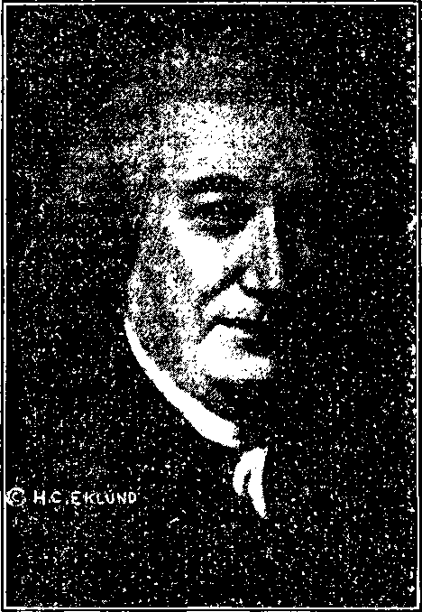

A JOURNAL OF FACT HOPE AND COURAGE
■iimimimiiiiiimiiiiiiiiimiiiiiiiiiiiimmiiimiriiiiiiiiimiiiiiti
in this issue
SALES PROPAGANDA KEEPS MILLIONS ILL
EVENTS IN CANADA
THE DEAD
NOTES ON NEWS
OBEDIENCE
YIELDS CHOICEST GEMS
lllllllllllillllllllllllllllllllllllllllllllllllllllllllllll!lllllllllllllllllll
every other
WEDNESDAY
five cents a copy one dollar a year Canada & Foreign 1.25
Vol. XV - No. 391 September 12, 1934
। I,,. ........ ii
CONTENTS
• • 04G) • ■ ■■ ■ ■ ■ ......... • • •
LABOR AND ECONOMICS
Highest Government Costs in 14 Years.......788
England Plans to Rebuild . . . 789
SOCIAL AND EDUCATIONAL
Not Quite Stationary.....787
Prohibition of the Truth . . . 787
Vacuum-cooked Wheat .... 790
Convenient Source of Calcium . 790
Good Substitute for Coffee . . . 790
Hint on Stove Cleaning .... 790
Cancer Increase in Australia . . 791
Raw Scraped Potatoes for Burns . 799
Cheapest and Best Mouth Wash . 798
A Few Uses of the Lemon . . . 799
Want to Die of Bright’s Disease? . 799
FINANCE—COMMERCE—TRANSPORTATION
Earnings Eight Times as Much . 788
British Post Office Savings Bank . 789
Martyrs’ Shrine Bonds .... 792
POLITICAL—DOMESTIC AND FOREIGN
Uncle Sam Enters Side Door of League
The Alien Sailor Racket .... 788
The Mileage Allowances .... 788
John Hanson, First President . . 788
“Men’s Hearts Failing Them for Fear”
True Briton at the Microphone . 789
Baldwin Has It Right . . . . 789
HOME AND HEALTH
Sales Propaganda Keeps
Millions III (Part 1) ... 771
Foreglimpses of the Coming Day . 787
Too Old to Serve in Civil War . . 787
Valuable Hard Times Recipes . . 790
Rhubarb Conserve......790
TRAVEL AND MISCELLANY
Events in Canada.....780
Misled About Canada’s Motor Road 781
Barry Opposed to Idolatry . . . 786
Is It True that “They Satisfy’’? . 787
Zaro Agha Dead at Last .... 787
Glut of Money in South Africa . 791
Dangerous to Resign in Cuba . . 791
Berlin Fountain of Fecundity . . 791
RELIGION AND PHILOSOPHY
First Steps in Christianity (?1 . 7SG
Would Have Inquisition Reestablished
Obedience Puts Choicest Gems in Memory's Casket . . . .
Letters Received at Paris . . 797
••oxQ* ■—- ■ —■ • ••
Published every other Wednesday by
GOLDEN AGE PUBLISHING COMPANY, INC.
117 Adams Street, Brooklyn, N. Y., U. S.A.
Clayton J. Woodworth President Nathan H. Knorr Vice President
Charles E. Wagner Secretary and Ireasuter
FIVE CENTS A COPY $1 a year, United States; $1.25 to Canada and all other countries.
Notice to Subscribers remittances: For your own .safety, remit by postal or express money order. When coin or currency is lo.st in the ordinal > mails, there is no redress. Remittances from countries other than tho&e named below' may be made to the Brooklyn office, but only by international postal money order.
receipt of a new or renewal subscription will be acknowledged only when requested. notice of expiration is sent with the journal one month before subscription expires. Please renew promptly to avoid loss of copies.
change of address ; Subscribers will please notify this office of change of address at least two weeks in advance.
published also in DanLh. Dutch, Esperanto, Finnish, French, German, Greek, Japanese, Norwegian, Polish, Slovak, Spanish, Swedish.
Offices for Other Countries
British ........ 34 Craven Terrace, London, W. 2, England Canadian.......40 Irwin Avenue. Toronto 5, Ontario, Canada
Australasian .... 7 Beresford Road, Strathfield, N. S. W., Australia South African ....... Boston House, Cape Town. South Africa
Entered as second-class matter at Brooklyn, N. Y., under the Act of March 3, 1879.
Volume XV Brooklyn, N. Y., Wednesday, September 12, 1934 Number 391
Sales Propaganda Keeps Millions Ill
In Two Parts— Part 1
IN THIS issue we present, in condensed form, the record of thirty wholesale poisonings due to the sales propaganda of the aluminum trust. These resulted in the known death of 13 persons and the serious illness of 2,759 others, but this is but a fragment of the damaging evidence against the use of aluminum cooking utensils which is steadily piling up.
Herewith are the names, and we have the full addresses in our tiles, of 45 that have been cured of stomach troubles, nausea, retching, vomiting, and indigestion of many years’ standing, by the simple expedient of ceasing to use for culinary purposes the metal that was slowly killing them.
Herein are references to 23 cases of cancer, ulcers, tumors, carbuncles, boils and swellings cured by the same means.
The poisons ingested by aluminum-poisoned food go the length of the body, cropping up in various ways, according to the natural constitution of the ones affected. Nineteen of the cases which follow were of headache and loss of mental power, with blindness in at least five instances, for periods from a few hours up to nine months.
The mouth, of course, was a great sufferer. Twenty-three mention the great relief which came from no longer having sore lips, sore mouth, sore tongue, bleeding gums and tonsilitis when they stopped overdosing themselves three times a day with aluminum sulphates, aluminum chlorides and aluminum hydroxide.
In 24 cases the heart and respiratory organs bore the brunt of the heavy burden of the slow but steady poisoning of the whole system. Palpitation, trembling, sinking spells, shortness of breath, chills, colds and attacks of the flu, all stopped when the cause was stopped.
In the effort to throw off the load of poisons 35 were subjected to such severe pains in the bowels, diarrhea, loss of weight, anemia, bloody
flux and unnatural hunger that, to use their own words, they were in such misery that they did not care whether they lived or died. Imagine the joy of these sufferers to be completely rid of these discomforts that had been with them for years.
Twenty-one of these reports are of excessive burdens on the kidneys, bladder, and liver, all working faithfully to throw off their share of burdens they were never designed to bear. Twelve others had skin eruptions, cracks and sores due to the same cause, and, finally, there are 26 whose nervous systems were completely upset, resulting in exhaustion, dizziness, semiparalysis, irritability and fainting spells due to their efforts to help pay the salaries and commissions of the clever salesmen who have put millions in the invalid class and caused, without a doubt, many, many thousands of deaths and ruined lives. For convenience, the evidence in this issue is arranged in alphabetical order of the 62 states, provinces and countries from which the evidence was gleaned.
Doctor Betts’ Important Discovery
Doctor C. T. Betts (dentist), of Toledo, Ohio, his health gone, his life at stake, discovered that it was his aluminum kitchen outfit that was killing him. In eight weeks from discontinuing its use he was on the road to recovery, and now looks the picture of perfect health. Like any honest man who clearly sees a great truth, he tried to get his discovery before the people. The Golden Age first gave wide publicity to this matter.
Doctor Betts is now the recognized authority on this subject. He refuses to put aluminum plates in any mouth, on the ground that they have often resulted in cancers. His opinions are fully supported by many eminent physicians and chemists quoted or mentioned in this article; in his own state, Dr. Josef Reed George, of 771
Cleveland, Dr. J. M. Morgan, of Toledo, and Dr. H. C. Temple, of Alliance.
Some of the tests which he recommends: Stir the whites of three eggs with cup of butter; add the juice of one lemon and sufficient cream to make a salad dressing; stir in an aluminum dish until thoroughly mixed; cook in the same dish fifteen minutes; look at it, taste it, note the color, throw it out. Shake a pint of sweet cream in an aluminum shaker fifteen minutes; let stand five hours; look at at; smell of it; bury it. To get the verdigris off your utensils, cook tomatoes, rhubarb, apple sauce in them; but don’t eat the verdigris, which is then in the food. Mercy, no! Throw the food away. Dr. Betts says some of the aluminum utensil manufacturers admit the metal is poisonous and are gracefully changing over to stainless steel. They should be encouraged in this. To test an aluminum utensil, he recommends preparing a shrimp salad in one; let the salad stand twenty-four hours; have the salesman eat it. If he is alive the next morning the dish is all right; but if he is dead the dish should be thrown away.
Recipe for group poisoning: Prepare fricasee of chicken with veal or pork and gravy in aluminum utensil; season well, and let stand some hours. Usually one in four will succumb, but where the food is allowed to stand twelve hours or more every person who partakes freely will be made ill.
Dr. Betts, like ourselves, has received many letters from people who have benefited from discarding aluminum utensils, and estimates that not less than 1,500 persons have accepted his personal advice and regained their health thereby. He recommends as desirable utensils pyrex, earthenware, Griswold cast-iron ware, Old English, Kochfix, Household Specialty Company, Columbian, Savory, Allegheny steel, Volrath, Polar and Balance and Grosjean ware, and there may be others.
Mrs. F. C. McCumber, of Alabama, writes that, having discontinued the use of aluminum utensils and alum baking powders, and derived great benefit therefrom, both for herself and family, the family visited relatives, most of whom still used aluminum utensils. Soon the whole McCumber family began to feel the effects; both the children started breaking out with huge boils and Mrs. McCumber herself had a severe attack of stomach trouble and a fever accompanying. This has made her determine to cut out visiting hereafter, as being positively unsafe. Others have written us similarly.
Mrs. L. P. Fogarty, of Alberta, writes that she and her four children were subject to mouth cankers for four years; her ten-year-old son had them down the throat as far as one could see, and they rapidly got more severe and larger. At that time her kitchen was full of aluminum utensils. Upon discarding it all the cankers and the continual attacks of tonsilitis to which the family had been subjected disappeared.
At Olds, Alberta, a group was poisoned at a banquet in honor of Hon. F. S. Grisdale, minister of agriculture. Details just at hand from the Winnipeg Free Press Prairie Farmer say the majority of the 250 guests were stricken, and that “according to stories from Olds, the chicken was cooked in metal pots and left standing in them.” Notice the careful concealment of truth.
Mrs. J. A. Ladd, of Arizona, writes that within five weeks after discontinuing the use of aluminum utensils there was a great improvement in her husband’s general health; he was able to sleep eight hours at a time, which he had not been able to do for years; his stomach condition was better, accompanied by an itching sensation as though the ulcerous condition— incipient cancer (?)—was healing.
Helen von Fichthenthal, expert nurse, of Arkansas, writes that at Bauxite is a lake created by excavating aluminum ore. It has been stocked with fish time and again, but they all die, and so does every living thing that tries to make its home in this aluminum-impregnated water. Yet men, the silly sheep, dump carloads of alum into city water supplies supposedly to make it fit to drink. Some of the overflow of the Bauxite lake was turned into Hurricane creek, theretofore always full of different kinds of fish. From the time the aluminum waters were turned into the creek not a fish could live in it, and not even a snail or a frog.
H. W. Allison, of Australia, writes: “I was much interested in the articles on aluminum, as I myself am a chemist. I no longer use aluminum.” This ought to be very convincing. It is noteworthy that Belgium and Brazil prohibit the use of aluminum compounds in foods, on account of the injurious effects of aluminum sulphate, aluminum chloride and aluminum hydroxide formed so readily by cooking eggs, salted meat, etc., resulting in nausea, ulcers and acidosis leading possibly to cancer.
Eduard Sykora, of Vienna, Austria, thinks that anyone who will cook fruits or fruit juices for a sufficiently long time in aluminum vessels, or let such fruits or fruit juices stand in those vessels for twenty-four hours, will know better than to eat any of the contents, which, by then, will have become nauseatingly distasteful. He says that no wine connoisseur will so much as taste wine that has been kept in an aluminum bottle.
Mrs. Charles Simpson, of British Columbia, bought a heavy waterless aluminum cooker and teakettle, and within a month thereafter her husband never had a well day. She says: “He would get up feeling not too bad, take about two cups of hot water out of this accursed kettle, and by ten o’clock could not sit up.” He lost 35 pounds in weight, his muscles wasted away; he had an uncontrollable thirst. In seven weeks from the time the aluminum outfit was ditched he was as well as ever and had gained fifteen pounds of the lost weight.
Mary E. Ekstrand, of California, canned beans in a jar with an aluminum lid; in time the lid was eaten full of holes. She churned cream in an aluminum utensil; both the butter and buttermilk resulting were so black she threw it all out.
Mrs. Daniel Toole, of California, said that her hubby ate some mayonnaise that had stood all night in aluminum and that she came mighty near losing him as a result. Wives who wish to get rid of their husbands now know what to do.
Mrs. Viola Chritton, of California, noted that her husband suffered terribly with his stomach, and every morning, after drinking his coffee, made in an aluminum percolator, became so dizzy he had to hold on to something to keep from falling. Since throwing out the aluminum poisoning apparatus he had no trouble with his stomach, and not even one attack of dizziness.
S. A. McKenzie, of California, got to the place where no food nourished him, he was hungry all the time, and so exhausted he would rather fall down than lie down, had a cold all the time, and a headache, and at times his mind would not function. He had pains all through his body, and great cracks between his toes. He got entirely well when he junked his aluminum utensils.
The mother of F. A. Robbins, of California, died in eight days after she was given a tablespoon dose of alum(inum) powder by mistake for Epsom salts. An hour after the dose was taken she began vomiting blood.
Mrs. H. S. Clark, of California, writes that while she used aluminum utensils her husband ate nothing at night, claiming that everything he had eaten at noon was still in his throat and sour; he was bloated, and suffered much pain, and she herself was similarly affected. All these difficulties cleared up when the use of the aluminum utensils ceased.
David Davidian, of California, investigated forty blocks of his home city after his wife recovered from stomach ulcers and sinking spells following the ditching of her aluminum utensils. His child of two years was cured at the same time, and by the same means, of peculiar sores in and around the mouth and swelling under her arms which the “child specialist” could not understand or correct.
Davidian found hundreds of cases of continual sore throat, vomiting, sick headaches, pains in the bowels, the limbs and other parts of the body, swelling of ankles, sour stomach, loss of weight, griping in stomach after drinking alumi-num-percolated coffee, nervousness, anemia and very pale complexion, and in every instance found they cooked their food in aluminum and, in the worst cases, were accustomed to let it stand in aluminum. Some of these had spent thousands of dollars for the services of the physicians who so insistently rush into print with the statements that aluminum utensils are perfectly safe for the people to use.
One woman who said to Davidian, “Damn the Bible; I have a boil on the back of my neck right now,” was interested immediately when he said to her: “Madame, do you use aluminum cooking utensils; do you suffer from stomach trouble and pains in the bowels ?” She admitted that she did, and in a few minutes took several pieces of literature, and, when he left, said, “I am glad you came.” Poor things; they only wish to live.
Dr. William A. Dewey, M.D., of Los Angeles, is wise. He says: “It is necessary to avoid aluminum dishes and utensils in the preparation of the food for a cancer patient.” He might have truthfully added that there are now many cancer patients who would almost certainly have been in good health if they had never come in contact with such utensils.
Mr. and Mrs. W. B. Collins, of California, paid $40 to a specialist to find out why they had suffered for five years from deranged digestion, palpitation of the heart, hot and cold flashes, cold feet and hands, constipation and headaches, and why their children had catarrhal conditions affecting their entire alimentary canals, resulting in colitis and bloody flux. The specialist never found out. Why should he ? But when the Collins family ditched their beautiful aluminum kitchen outfit they all got well.
N. A. Yuille, of California, suffered for years from a serious stomach inflammation, which a long fast seemed to remove. At length it returned, but on discarding aluminum utensils it disappeared again; and now he writes that he does not know he has a stomach, and both he and his wife are enjoying better health than for a long time.
Dr. George Starr White, of Los Angeles, does not allow his patients to use aluminum utensils.
At Denver, Colorado, 44 clubmen, after a banquet on the best foods that money can buy, had the violent nausea, retching, cramps and hemorrhages which commonly follow the eating of foods cooked and stored in aluminum utensils. The “health authorities” (excuse us while we laugh, please) never found out what caused the trouble, and never will. Why learn something that you have solemnly determined never to learn? But if the clubmen had summoned Dr. J. H. East, of that city, he could have told them; for he knows, and so does every Golden Age subscriber of that city.
Dr. Frank P. Underhill, professor of pharmacology and toxicology, School of Medicine, Yale University, Connecticut, has the truth on this subject.
F. A. Swathel, of Connecticut, writes that within a few weeks after leaving off aluminum a gastric ulcer which had been active for ten years became dormant or was healed.
Henry Steele, of Costa Rica, suffered for years with a pain in the right side of his abdomen, which some thought to be appendicitis and some thought hernia. The hernia guessers won, enough so that Steele wore a truss, but without results. His wife noticed that when she boiled cocoa in the aluminum pot it always looked as if the milk had already been placed in it. At length all aluminum utensils were disposed of, and appendicitis and hernia disappeared together and Steele got well.
A neighbor of F. G. Robinson, of Cuba, cooked vegetables for Belgian hares in an aluminum pot. As the food was too hot to serve at once, it was put away till the next day and then fed to the hares. The hares both died as a result of their aluminum banquet.
Czechoslovakia, progressive and intelligent, prohibits the use of aluminum compounds in foodstuffs. In this country everybody is afraid because the Mellons control some $8,000,000,000; therefore little is said, but the Treasury department did at one time admit that food should not be left to stand in aluminum dishes. Two men on record at Washington as having the truth on this subject are W. D. Bigelow, director of research laboratory, and Dr. E. C. Folkmar, M.Ph.
Comical things happen along with the tragedies. A couple got their eyes open. The next day, at the home, the wife packed the new and handsome aluminum set off as a gift to her mother-in-law and, at the office, the hubby, not knowing of the gift, wrote to his mother telling her of his discovery that aluminum ware is poisonous, and to discontinue its use. The esteemed mother-in-law received the gift of the utensils and the letter telling of their poisonous nature at the same moment. This happened in a family at that time high in the official life of Washington.
G. Donaldson, Ph.C., M.P.S., London, after explaining at length the chemical reactions involved, says in The Healthy Life: “Since our vegetable foodstuffs contain alkaline salts and chlorides, it will be evident that aluminum utensils are not suitable for the cooking of vegetables and potatoes.”
Dr. Alexander Francis, M.D., London, claims to be so sensitive to it that he can tell by sampling any article of food whether it has touched aluminum. In his own case, and in that of six patients, he found that the stopping of the use of aluminum vessels put an end to abdominal pain.
In England, at present, the cancer death rate is five times what it was before aluminum cooking utensils came into vogue. England prohibits the use of aluminum compounds in foodstuffs.
As we go to press we have reports of between fifty and sixty people poisoned in the Lincolnshire (England) villages of Welton, Dunholme, Snarford and Faldingworth, one of whom, a man 83 years of age, died. We do not know the cause of the poisonings, but it is attributed to food, and we have no doubt it was food of good quality which had been turned into poison by being kept in aluminum vessels after first being cooked therein. The more widespread the propaganda that aluminum is perfectly safe for cooking purposes, the greater will be the harvest for the doctors and undertakers.
Joseph Izzard, of England, had a child, fed by bottle, that passed water of unusual odor and color. The physician prescribed, to no avail, but when the baby’s milk was prepared in an iron pan instead of an aluminum one the child’s trouble disappeared as by magic.
In any factory where aluminum wares are made it is common for the workmen to have fingers that remain sore for weeks at a time.
John Spofforth, L.R.C.P., Edinburgh, M.R.C. S., England, writes in The Lancet of a man of 46 whose job was that of dipping red-hot metal articles contained in an aluminum holder into concentrated nitric acid. The man was in a state of great exhaustion, suffering from severe and persistent vomiting, loss of memory, tremor, jerking movements, and incontinence of urine. A chemical examination of his urine showed a large amount of aluminum.
Aluminum chloride is formed in the stomach when aluminum hydroxide is redissolved by the hydrochloric acid of the gastric juice. Dr. Herbert Snow, M.D., of London, England, is authority for the statement that “aluminum chloride is a powerful narcotic poison”. The British War Office has permanently discontinued the use of aluminum water bottles. They discovered that when wine was carried in those bottles, and afterward was drunk, the men were made deathly sick.
Edwin Whibley, of England, writes that he was severely poisoned, with almost fatal results, and is now a complete physical wreck consequent upon the use of aluminum cooking-ware.
Dr. Leo Spira, of Vienna, now in England, has published at length on the “Clinical Aspect of Chronic Poisoning by Aluminum and Its Alloys”.
Dr. S. R. Love, St. Petersburg, Florida, writes of a patient suffering at intervals from acute digestive troubles. At length it transpired that when he was in the north, where the cooking was always done in iron utensils, he was always well; when he returned to Florida, where the cooking was always done in aluminum utensils, he was always sick.
Dr. Love himself is so sensitive to aluminum poisoning that one meal cooked in the ware will make him ill. He says: “When I keep free a long time I have a keener relish and enjoyment of food, but when I have been free a long time and get one meal contaminated with aluminum it ducks me under more completely than if I had been continuing its use right along in a groggy, semi-paralyzed condition.”
Mrs. Mabel Travis, of Florida, suffered from numb hands and feet, headaches, trembling spells and dizzy spells; her husband also had spells of heart tremble, liver ailment, rheumatism, indigestion and bowel trouble. But when she discarded her bright, pretty aluminum cooking-ware, all these diseases entirely ceased.
Fort Lauderdale, Florida, dumps 40,000 pounds of alum into its municipal water supply every three months. It is a marvel that anybody is able to live there at all. Some of the inhabitants protect themselves by drinking rainwater instead.
Mary Ann Mustard, of Florida, found a case of aluminum poisoning where the ankle and wrist joints became swollen and when cut open ejected blood and pus, some of them as many as seven times. When the utensils that caused the trouble were disused the troubles cleared up, except the left hand, which is now permanently useless.
Janies Russell Price, of Florida, says humorously and poetically: “I took two pails of water, and set them side by side, one porcelain, one aluminum; the mosquitoes could decide. The wrigglers came by thousands inside the porcelain pail; not one in the aluminum to wag its tiny tail.”
Dr. Charles B. McFerrin, publisher of National Health Review, Orlando, Florida, has the truth on this aluminum-compounds-in-foods question. In his new book, 100 Points upon Health, four pages are devoted to poisoning by aluminum.
France prohibits the use of aluminum compounds in foodstuffs, and the French Congress of Medicine has officially set forth the announcement that “colloidal hydrate of aluminum absorbs hydrochloric acid”; thus, in effect, stating that aluminum cooking utensils are unfit for human use.
Ellen Williams, of Georgia, 65 years of age, became blind and semi-paralyzed. Two years after discarding aluminum utensils her sight returned and she was gradually regaining the use of other portions of her body.
The state chemist of Georgia found more than two ounces of aluminum poisoning in the organs of W. J. Williams, and stated that half that amount would have been sufficient to cause his death. The state chemist is a brave and honest man, and will no doubt lose his job for having told this truth.
Germany and Hungary both prohibit the use of aluminum compounds in foodstuffs. Dr. von Puetensen, official doctor of the palace of the governor of Bavaria, in a review covering six issues of the Berlin Deutsche Aertze-Zeitung, concludes that damage to health from the consuming of foods or drinks which have been kept in aluminum dishes is to be expected.
Mrs. George W. Smith, of Idaho, cooked wheat flakes in an aluminum kettle and let the food stand, to see what would happen. In ten days the kettle had six large-sized holes in it. If you don’t believe it, try it.
Mrs. C. I. Allen, of Illinois, for years was a sufferer from stomach troubles and headaches and was much emaciated. When she gave up aluminum utensils these troubles left her and she increased in weight from 100 to 128 pounds.
A little advertising booklet entitled “The Precious Metal of the Kitchen” says, on page 10, that the great Edgewater Beach hotel, Chicago, is one of the world’s famous hotels where all the cooking is done in aluminum; and the manager of the hotel, in answer to a personal letter, says that none of the cooking of the hotel is done in aluminum utensils.
Earl F. Paulson, of Illinois, had a skin disease that for eight years baffled the best skin specialists in Chicago. He kept getting worse instead of better. When the last of the family aluminum ware went into the alley his skin began to heal, and in six months was clear. Until then his mother was often ill with intestinal trouble, but has had no attacks since.
Mrs. E. Pierce, of Illinois, took two plants, slips of the same size, from the same soil, and gave them the same care, one in a regular plantdish and the other in an aluminum dish, and stood them in the same window. The one in the plant-jar grew rapidly and beautifully; the one in the aluminum dish stood still, and would have died, but after some weeks was transferred to a regular plant-dish and became as beautiful as the other.
Frank Harper, of Hlinois, repeatedly drank at night coffee made in the morning and allowed to stand during the day in an aluminum coffeepot. Taken suddenly ill with chills and fever, he vomited a black substance and his color became greenish. The doctor in this case, an honest and courageous man, unhesitatingly pronounced it a case of aluminum poisoning. He is liable to be thrown out of the Medical Association for admitting this.
Dorr E. Wood, LL.B., D.O., D.C., M.D., of Illinois, believes that the use of aluminum is bad for the health of everyone, and submits a list of experiments which will prove it to anybody: Tea looks cloudy instead of clear when made in an aluminum pot; a fresh egg smells bad when fried in an aluminum dish; apple or rhubarb sauce turns dark green when left standing in an aluminum dish; cranberries turn from a bright red to a black color; bread dough gets black when rubbed on aluminum; angel-food cake looks dark, with dark streaks through it, after the batter is stirred in an aluminum dish; peeled potatoes left standing in water in an aluminum dish overnight turn yellow, and after being cooked, turn black; vegetables boiled until dry in aluminum are covered with a light “frost”, or powder; lemonade made in aluminum has a very bad taste; butterscotch pie filling boiled five minutes, then stirred five minutes in an aluminum dish, will turn from a rich brown to a dark green color; cabbage boiled in aluminum turns the dish black; one’s hands will get black simply from carrying an aluminum tray in a cafeteria; the hotter and cleaner the tray, the blacker one’s hands become; tomatoes, apple sauce or rhubarb boiled in aluminum five minutes will make the aluminum dish bright and clean; the aluminum dish in which cherries are boiled and allowed to stand twelve hours will be full of little pits or holes, apparently eaten in; jello allowed to cool and stand in an aluminum dish eighteen hours tastes bitter. More tests are suggested by Doctor Betts, of Toledo. See under Ohio.
Although he would far rather we should keep silent about it, Dr. H. A. McGuigan, professor of pharmacology and therapeutics in the University of Illinois, at Evanston, made statements which were published in his books, as follows, pertaining to the matter of ingested aluminum compounds:
When aluminum compounds are taken internally, the action is due to chemical local action on the stomach and intestines, the acid liberated upon the union of metal and protein penetrating to the tissues with an astringent effect. The local reactions are loss of appetite, pain and discomfort, nausea, vomiting, purging, congestion, hemorrhages resulting from irritant and corrosive action. Ulcers may result from bacterial action on dead tissue.
There is plenty of Illinois evidence that aluminum is of no good for humans. Dr. Wm. H. Burt, M.D., Chicago, in his book Physiological Materia Medica, says that alumina produces great dryness of the secretions of the mucous membranes and most profound prostration of the animal nervous system.
A. C. Cowperthwaite, M.D., Ph.D., LL.D., in his Materia Medica and Therapeutics, says, “Alumina affects directly the motor nervous system, giving a paralytic condition, but it shows its most specific action upon the mucous membranes, and of these the intestinal and vaginal are principally involved.”
Dr. Harry G. Wells, pathologist of the University of Chicago, states: “My opinion is that aluminum compounds are poisonous to all forms of life, including the higher animals.”
Dr. P. L. Clark, M.D., has done much good broadcasting over WWAE the truth as to how aluminum has been and is breaking down the health of the people. It is a wonder somebody has not killed him before now for some of the truthful things he says about some of the humbugs of our time. He fired all aluminum out of his hospital, after which a persistent poisoning of his own body soon cleared up.
Dr. Wm. Held, of Chicago, was one of the first of the M.D.’s to get his eyes open to the evils of aluminum utensils, and has written powerful articles on the subject. See his “Disease and Early Grave via the Modern Kitchen”, published in The Golden Age No. 213, issue of November 16, 1927.
After the death of twelve-year-old Helen May Oliver, of Indianapolis, from alleged appendicitis and a ruptured stomach, Dr. Julia C. Eberle visited the home and found that the only cooking utensil in the home was a perforated aluminum kettle in which the food of the family was prepared. Another of the family nearly died. It was a clear case of aluminum poisoning.
G. Y. McCormick, of Indiana and other places, points out that no other metal oxidizes as fast as aluminum, that one never sees aluminum flatirons, because they would ruin clothes, and that it just does not seem like common sense to cook in something that smuts off so rapidly, albeit the rust is gray rust instead of the red color associated with iron.
Aluminum bases on electric sweepers have been discontinued because they turned lightcolored rugs dark. Some people have much more consideration for their rugs than they do for their stomachs.
Mrs. W. Carnes, of Iowa, writes that she used to doctor all the time, but has not had a physician since she quit using aluminum utensils. Victor C. Myers, professor at the University of Iowa, has the truth on this subject.
W. V. Daniel, of Iowa, writes: “For five years I had terrible pains in my stomach, and for the greater part of that time I was unable to eat oranges, lemons or green onions, but within one month after discontinuing the use of aluminum cooking vessels I could eat anything, and within one year I could walk without a cane, two of which I had been compelled to use for over five years.”
Alum, indispensable in the dyeing of fabrics, is not so indispensable to the human stomach. For centuries the European alum industry was under exclusive papal control, and when a Britisher found a supply of the mineral in Yorkshire he was solemnly and vigorously cursed by the “pope”.
Some years ago Bennington, Kansas, had a Memorial Day poisoning. Fifteen persons were made seriously ill by eating good food which was spoiled by being cooked in new aluminum cooking utensils, allowed to stand in them and warmed in them. Not a word of this got into the papers. Even the local papers refused to print the truth about it when brought to their attention.
Mrs. E. Maercker, of Kansas, injured in an automobile accident, nearly died of aluminum poisoning because all the food in the hospital where she stayed was cooked in aluminum. We do not know whether Mrs. Maercker was cared for at the Bell Memorial hospital, Kansas City, Kansas. Sixty-five persons were recently stricken there by what we believe to be due to food cooked in aluminum and allowed to stand in the vessels in which it was cooked. An official of the hospital said, “We use a great number of aluminum cooking utensils in this hospital.” If interested in keeping people sick we should wish to go into the hospital business and use aluminum utensils exclusively.
J. A. Fehr, of Kansas, hardware merchant, ceased selling aluminum utensils, his most profitable line, after discontinuing their use in his own home and taking note of the improved condition of his health and that of his family. A customer, similarly benefited, earnestly urged him to accept $5 compensation for his advice that, to end her stomach troubles, she use some other kind of utensils for but thirty days.
At Kansas City, Kansas, out of 554 guests at a banquet, all the food for which was carefully selected by experts and cooked in brand new aluminum ware, 150 persons became ill within twenty-four hours: a typical aluminum poisoning case.
Mrs. Maude II. Carder, of Kansas, ordered to submit to an immediate exploratory operation, as a last desperate effort stopped cooking in aluminum, and immediately began to get well.
Miss Eva Wynn, sixteen years of age, died at Cumberland College, Williamsburg, Kentucky, when 33 others were made desperately ill from eating food left in an aluminum receptacle. After the death the college authorities ordered all aluminum dishes removed and white enamel ware substituted.
Edward B. Crawford, of Kentucky, pioneer, and his partner, were both made ill from eating a fine chicken, specially baked for them in an aluminum dish by Jonadabs, who intended to be only a blessing to them.
Mary F. Myers, of Kentucky, found that birds refused to use an aluminum basin for their bath, but when she substituted one of galvanized iron, of the same size and shape, they came in flocks, enjoying it immensely.
In Kenya, darkest Africa, the natives refuse to have their food cooked in aluminum, preferring to carry infinitely heavier iron vessels for miles.
At a picnic at Little Woods, Louisiana, 22 New Orleans young people were made deathly ill by drinking punch from an aluminum bucket.
Fred F. Dearborn, of Maine, was nearly dead from stomach and liver trouble, and so low he was unable to leave the house. After throwing his aluminum cooking kettles on the dump he regained his health and was able to return to work. One year when the bees did not have enough honey he fed twelve swarms with sugar dissolved in an aluminum pitcher; every one of these swarms died. Saddest of all, he had a dear little boy who lived just 28 days because his milk was always warmed in an aluminum cup.
Alden McGrath, of Maine, was continuously under medical care foi' alleged nervous indigestion, renal stones and sinus troubles, but all of these “imaginary” difficulties cleared up completely when he discontinued the use of aluminum ware.
Charles Tovey, of Manitoba, seriously injured by a premature blast, bought a new aluminum kettle in which to sterilize the water and cotton with which to bathe his injured eyes. Infection arose and three operations were necessary, but when the aluminum vessel was no longer used the eyes began to get better at once.
Mrs. 0. B. Holbrunner, of Maryland, writes that her father, continuously ill for thirteen years, during all of which time aluminum ware was used exclusively in the home, was alleged to have cancer of the stomach, but, as he was 73 years of age, it was thought not best to operate. However, she threw away her aluminum ware and bought enamel ware in its place; her father got well and the “cancer” disappeared.
May Berg, of Maryland, writes that two beautiful Troller or Chesapeake ducking puppies went on a strike for twenty-four- hours and absolutely refused to touch a nourishing meal specially prepared for them in an aluminum utensil. They turned down a fine meal of meat, vegetables and corn meal, but greedily devoured plain corn-meal mush and milk cooked in a vessel fit for the purpose.
Despite the wise counsel of Dr. Edward S. Wood, of Harvard Medical School, and Professor Lewis B. Allyn, town chemist, of Westfield, the citizens of Massachusetts hold to their inalienable right to kill themselves in whatever
September 12, 1934 way they elect, and so we have the wholesale poisonings such as occurred at the Ford plant at Somerville, 60 persons ill, and that at Natick, 74 persons ill, the latter poisoned at a unity church supper from choice chickens, prepared by an expert cook, cooked in an aluminum kettle and kept in it until the hour for the poisoning had arrived, because it was the only dish available that was big enough. By the way, it is now almost impossible to get the good old-fashioned iron pots, the iron from which not only did not harm the user, but actually benefited him.
The Institute of Technology of Massachusetts, under the direction of Prof. S. C. Prescott, made a three-year examination at a cost of $30,000, to determine why coffee becomes poisonous when made in certain utensils. He examined coffee made in aluminum, glass, earthenware and enamels. His verdict was that coffee made in the metal container so commonly used in our homes today has a ‘'disagreeable”, “puekery,” “bitter,” or "metallic” taste. He found that a certain corrosion remaining inside the pot goes into the next brew, producing a form of metal coffee poisoning. He found nothing but scorn for the ordinary coffee percolator because it is universally made of metal. The professor examined only one metal (aluminum). He made his findings entirely upon “metal” containers; so he very carefully concealed the word “aluminum”.
J. V. Pelletier, of Massachusetts, took treatments at the Massachusetts General Hospital, for bladder and kidney trouble, without getting any results, but when he quit drinking coffee made in an aluminum coffeepot he got well.
An aluminum salesman told II. W. Newcomb, of Massachusetts, that when he drank in the morning a portion of liquor that had been left overnight in an aluminum shaker he became so ill he thought he was going to die.
The sovereign citizens of Michigan feel that if Massachusetts people can ignore the advice of such men as Dr. Wood and Prof. Allyn, there is no reason why they cannot also ignore the similar advice of their own Dr. Victor C. Vaughan, doctor of philosophy and medicine, University of Michigan, Ann Arbor; Lewis V. Heil-brunn, Ph.D., of the same university, and Dr. Wm. Koch, of the Koch Cancer Foundation of America, Detroit, and have such poisonings also.
Of 75 persons who attended a picnic at Ionia, Michigan, 18 were confined to their beds, too ill to talk at the time the “investigation” was undertaken to find out why they were ill.
Mrs. Mary E. Lovette, of Michigan, often had to resort to pain pills for continual sore throat, stomach, bowel and bladder trouble, and nearly died from an ailment diagnosed as “gallstones” caused by eating cabbage cooked in an aluminum kettle. When she discarded all aluminum ware, also alum baking powders, she recovered completely.
Harry E. Childs, of Michigan, is sorry his mother died of cancer, caused by aluminum poisoning. He did have a fine set of aluminum, but dumped it all overboard.
Mrs. M. McGregor, of Michigan, found she could give her husband sore mouth by encouraging him to drink hot tea and coffee from an aluminum cap on his thermos bottle, but when a porcelain cup was substituted the fun was all over and the man got well.
Thomas Kiner, of Michigan, traveled to Florida in a house-car equipped with nice bright aluminum utensils, and came back a wreck; but when the new kitchen outfit was ditched he got well right away.
Mrs. Thos. Wilson, of Michigan, nonuser of aluminum utensils, went visiting for one day, with her three children accompanying her. All who went were made alarmingly ill from eating foods cooked in aluminum. Her nursing baby suffered with a rash covering the entire body.
Mrs. J. A. Thum, of Michigan, spent hundreds of dollars to rid herself of neuritis, pains in neck and head, but found no cure until she ditched her aluminum utensils. Now she and her husband are enjoying the best of health and have had no medicine in the house for three years. She says: “We never eat in restaurants or at the homes of friends that use aluminum. After eating candy, ice cream with flavoring boiled in aluminum, or popcoru popped in aluminum I can feel the effects in thirty minutes, and for a day or two have an exhausted feeling and feel very irritable.”
At Hubbardston, Michigan, Mrs. Edward Proctor cooked a duck and packed it, still warm, in a closed aluminum container. When she, her husband, her son, Lola Proctor and Mary Feehan, ate the duck in the berry patch, where they worked, it nearly killed them all.
(To be continued)
THE government’s probe of the spread in price between manufacturer and consumer under what is known as the “Stevens’ Price Spreads Committee” has brought much to light concerning the corruption, oppression and graft of big business, making more manifest the need of a complete change in the commercial structure. The following are two interesting reports appearing in the Mail and Empire of Toronto:
The biggest incomes for industrial executives ever made public in Canada were revealed today when the Stevens’ price spreads committee disclosed that four Imperial Tobacco Company officers divided approximately $1,491,000 between them during the five years 1929 to 1933 inclusive.
D. C. Patterson, former president of the company and now chairman of the board of directors, topped the list with a total of $469,094 during the five-year period. In 1930, his best year, Mr. Patterson received $142,087 in salary and bonus. As chairman of the board, he received only $10,000 in 1933, but in the four previous years, as president, the company paid him an average of $114,773 a year.
While the committee room crowd breathlessly leaned forward to hear, Norman Sommerville, special committee counsel, read figures showing that in these five years Gray Miller, now president of the company, averaged $68,989 a year, while two vice-presidents, W. H. P. Buell and C. D. M. Townsend, had $67,695 a year each.
Sam Factor, Toronto Liberal, produced a report of the Dominion Bureau of Statistics stating that in 1930 the 7,215 men and women employed in the tobacco industry had received an average of $689 a year each. He asked Mr. Miller, who was on the witness stand, to affirm or deny this.
The Imperial president replied that he had not the information but would get it. He was subsequently requested to produce full data as to tobacco factory wages. Mr. Factor claimed that girls making nickel cigars by machine were paid only 75 cents a thousand.
According to Mr. Sommerville’s statement, five percent of the net profits of the Imperial Tobacco Company are divided among the president, the vicepresidents and directors, the proportions being determined by the president and vice-presidents. Thus, besides his salary of $40,000 a year, Mr. Patterson as president received in 1929 a bonus of $75,744, making a total income of $115,744 for the year. In subsequent years he received the following: 1930, bonus, $102,087, total income, $142,087; 1931, bonus, $67,364, total, $107,364; and 1932, bonus, $53,899, total, $93,899. He retired as president and became chairman of the board on January 1, 1933, then receiving $10,000 salary and no bonus.
Mr. Miller listened silently while his own salary and bonuses were then read out by Mr. Sommerville. The salary remained throughout at $25,000 a year. The bonuses and totals were: 1929, bonus, $45,446, total income, $70,446; 1930, bonus, $61,253, total, $86,253; 1931, bonus, $40,419, total, $65,419; 1932, bonus, $32,339, total, $57,339; 1933, bonus, $40,487, total, $65,487.
With six of Jehovah’s witnesses sent up for trial in Quebec, charged with having part in a seditious conspiracy, and the more recent trial of one, A. E. Smith, charged with having used seditious language, it seems Canadian authorities are suffering somewhat from hysteria. Speaking of the Smith ease the Toronto Star editorially says:
After a protracted trial on a charge of having used seditious language A. E. Smith, general secretary of the Canadian Labor Defense League, was found not guilty by the jury and discharged by Chief Justice Rose. The case now being thus disposed of we feel free to say that we think the prosecution of Mr. Smith on the charge of sedition was ill-advised on the part of the authorities and seemed to have its origin in the activity of policemen rather than in the sound consideration of the matter by authorities more competent in handling the affairs of the crown.
If Mr. Smith in his speech had said anything about Rt. Hon. R. B. Bennett that was unlawful for one man to say of another, he could have been prosecuted for slander. The laws are there, and the courts are available. Why should it be regarded as seditious to attack Mr. Bennett and not seditious to attack Hon. H. H. Stevens or Hon. R. C. Matthews? Is it to be considered seditious to attack a party leader one year when he holds office and not seditious the next year when he is out of office?
The address of Chief Justice Rose explaining the law of sedition and the nature of the language that is to be construed as seditious was an exceedingly able deliverance, and nobody could hear or read it without admiring its lucid reasoning on an elusive subject. It is quite evident that sedition is a crime rather beyond the capacity of a policeman on his beat to cope with. The best-trained minds in the service of the crown can alone be entrusted with the task of dealing with it. Nor is it a crime likely to be met with around every comer. There have been very few cases of it in Canada, and we feci sure there will be few. It can be nobody’s desire to have it on the police court docket every morning.
If it is seditious on the part of a public speaker to seek to “bring the government into contempt” Mr. Bennett was highly seditious four years ago, and Mr. Mackenzie King is likely to be equally so this year. It was natural enough a hundred years or more ago
that the governments of that day should write into the law a definition of sedition that would tend to silence criticism by the people of those who ruled over them. Government, then, was conducted apart from the people. The reforms of 1832 brought great changes. The “sedition” law needs to be brought forward a century or two. There is nothing sacred or divine about a parliamentary administration in these days. It has behind it the ballot boxes of the country. The electors who made the Mackenzie King administration in turn made the R. B. Bennett administration, and in the process of making one and then the other the electors did a great deal of criticizing, censuring and attacking and, in unmaking the present government, will do plenty more of it. Prosecutions for sedition, heresy, witchcraft, will not avail to prevent it.
The law against sedition needs to be brought into conformity with the realities of democratic life. A few years ago the minimum penalty for sedition was twenty years, but Parliament reduced it to two years. Why not redraft the clause on right lines? This is something that needs to be written. Section 98 (a war measure still in force), on the other hand, needs to be unwritten and removed altogether, as those statutory provisions which formerly occupied its place were ample for every right and proper purpose needing to be served.
With the prime minister of Canada, Mr. Bennett, striving to reduce wheat production, and the premier of Saskatchewan, Mr. Anderson, planning to destroy the grasshoppers, we find a situation here somewhat hard to understand. The Furrow sarcastically says:
We have said it before and we say it again, that Bennett and Anderson should get together and come to a decision as to whether the grasshoppers were sent by Providence to assist in wheat reduction or to increase the market for poison; whether the government should appropriate some funds for grasshopper hatcheries or for tractors to plow the eggs down. It is embarrassing for good citizens to see the federal and provincial heads of governments working one against the other.
“The secret of the snows” may have more meanings than one, it would seem from the following appearing in the Saskatoon Star Phoenix:
A grim and silent war, which has already cost the lives of many men, is being waged by Canada and Soviet Russia for the possession of a vast snow-covered empire in the Arctic.
The prize is supremacy over 2,000,000 square miles of land and a mastery of secrets which may revolutionize the future of the world. The battle is being waged, not by troops and guns, but by groups of intrepid explorers and scientists.
Until recently the Arctic was regarded as a land of frozen waste. Today it is known that some of the so-called barren lands are among the richest in the world.
Oil, gold, silver, lead, zinc, coal, radium, great reserves of fish, game and timber are being found in increasing quantities. It has been learned, too, that in the Arctic are the solutions of many weather problems which have so far baffled meteorologists.
Many of the discoveries made to date have been made on land already in Canadian or Soviet territory. But hitherto unknown islands are now being found by each country and quietly annexed. Airplane bases, settlements and methods of communication with the outside world are being established • for it is believed that the nation which can control the Arctic may in time dominate the world’s mineral supplies and monopolize highly important air routes between Europe and the Far East.
The battle for possession of the Arctic was started five years ago when Stalin decreed that “the Arctic must become Soviet Arctic”, and ordained a five-year plan for the purpose.
Canada took up the challenge. Since then both countries have accomplished miracles in the vast Arctic wastes, which hitherto had been regarded as useless and uninhabitable.
Russia’s five-year plan has just ended, and a report has been issued showing what she has achieved in the polar regions during the past few years. This is what the Russians have done:
‘Sailed from the Arctic coast of Russia, down through the Bering Straits and into Vladivostok in one season—a feat never before accomplished.
‘Covered 50,000 miles by sea, 40,000 miles by land, and 16,000 miles by air.
‘Established towns on land hitherto regarded as uninhabitable. One of these is Igarka, which already has 15,000 inhabitants, and holds the key to the Kara sea, one of the most important areas in the Arctic.
‘Increased, by systematic migration, the population of another key position, the island of Novaya Zemlya, and organized it on military lines.
‘Mapped and plotted navigation routes along the whole of Russia’s northern borders.
‘Established on Franz Josef Land the most northerly radio station in the world. It is powerful enough to communicate with the Antarctic.
‘Settled a permanent post on Wrangel Island.*
Canada’s activities in the Arctic have been less spectacular than those of Russia, but just as successful.
Canada is not driving whole populations into remote territories, but is concentrating on extending her knowledge of the geography of the Arctic. Year by year she is increasing her hold.
The population of the 1,258,217 square miles of land which Canada has taken over is less than 13,000, but she knows every inlet of their country, and has established for their benefit a vast wireless network.
Already Canada is working the most northerly mines in the world. In a short time she will be selling radium from the shores of the Great Bear lake.
Recently she established a regular air service farther north than Russia has yet attempted.
To insure food supplies, her scientists are now working in laboratories in Ottawa to produce wheat which will germinate in a far shorter period than any yet evolved, and enable grain to be grown well within the Arctic circle.
Ono of the most remarkable treks in history has just been finished. Four years ago the Canadian government bought 3,000 reindeer from the United States, and has just moved the whole herd from Alaska to the mouth of the Mackenzie river, to form the basis of supplies of food and clothing for a possible great population.
Every year Canada sends ships to visit her settlement in the Arctic, with relief doctors, hospital supplies and the like.
Canada has another secret. In the Far North there are mighty rivers, which are ice-free for short periods. She intends to harness these for electric power.
That movies are very detrimental to the nervous system of children seems apparent from the following report appearing in the Toronto Star:
The youth of a nation sees heroes and heroines of the screen commit crimes of housebreaking, kidnaping, robbery and even murder, and few, almost none, of these movie stars “ever suffer much more than to go to the grave of their mother and kneel down and weep”, claims Mrs. Robbins Gillman, president of the Federal Motion Picture Council of America, in a statement released today by the Local Council of Women’s committee on cinema and radio.
Motion pictures, according to detailed study made by Mrs. Gillman, are “based largely on sex, love and crime ’ ’.
“We arc not advocating the prohibition of these things in motion pictures,” stated Mrs. Gillman, “but we arc asking that the treatment of the subject material be such that youth need not be overfed with a more mature treatment of them than they are able to assimilate and interpret to their own good.”
In the United States, according to Mrs. Gillman, 28,000,000 people under 21 years of age are attending motion pictures once or twice a wreek.
In Canada the comparative figure is estimated to be 32 percent of the country’s population.
“We have obtained a definite picture of the children who have been admitted into institutions for delinquency,” Mrs. Gillman’s report reads, “and we find that they have attended motion pictures on the average seven times a week. It takes about $350 to $500 a year to take care of each of these children, and that alone makes it an economic question. ’ ’
Heart beats among children, which ordinarily run from about 72 to 80 beats to the minute, ran up as high as 194 during the showing of pictures, Mrs. Gillman disclosed. ‘ ‘ When one boy of 16 saw a picture it ran his heart up from 80 to 154. It was 72 hours before his heart action became normal, and he could not sleep for a whole week.”
While little is said in the press of the terrible abuse of Indians and others under Catholic control, nevertheless from time to time it comes to the surface and is made known. Concerning the lashing of some Indian boys, the Family Herald says:
Displaying nasty scars apparently marks of a lash, nineteen Indian boys claim they were stripped to the waist and whipped by officials of the Indian Reservation school at Shubenacadie, N. S.
Ten of the boys, escaping from the institution, brought the story to the office of the Indian Agent, Allison McDonald, who immediately reported the complaint to the Department of Indian Affairs at Ottawa, and to the Department of the Attorney-General of Nova Scotia.
“The Indians of Shubenacadie are up in arms, and I hardly know what to do with them,” declared the Indian Agent.
The flogging of the children, allegedly to wring from among them confession of those who had stolen $53, is now under investigation at Ottawa.
The Department of the Interior have communicated with Rev. Father J. P. Mackey, principal of the institution, asking for more complete information than he had originally sent them. Rev. Father Mackey said that he had been present during the flogging, and had some part in it. He said he did not consider the treatment unusually severe. The beatings had not been administered as punishment, he said, but to elicit information about the missing money.
McDonald, the Indian Agent, stated the punishment was meted out to the lads because one of them had stolen a sum of money from one of the “Sisters of Charity”. This, he declared, is the excuse offered for what he termed the “brutal treatment of the Indian boys ’ ’.
Indians of the reservation were enraged, he said. They were demanding redress and the removal of Rev. Father Mackey. Some of the parents, he declared, were taking steps to remove their children from the home.
Five of the ten boys who escaped from the school, Mr. McDonald stated, showed heavy sears on their backs, and they were examined by Dr. McInnes, Shubenacadie doctor. The boys’ parents had been notified, and they, too, admitted that they had noticed the nasty marks on the bodies of their children.
The flogging is alleged to have been done by Edward McLeod, caretaker of the institution, and in the presence of a Royal Canadian Mounted Police officer. Indians on the reservation have raised a fund of $25 for legal assistance in probing the whole situation. An appeal has gone out to the Indian reservations at Truro and elsewhere, asking for moral and financial support in contesting their claims.
The Indian Agent said that the whipping has not only incensed Indians, but that the townspeople of Shubenacadie and Truro were stirred up over the affair. From ten to twenty strokes of the lash were given to the boys, ranging from 6 to 20 years old, the agent said.
Speaking of the Canadian National Railway the Edmonton Bulletin says:
The following table showing the number of men employed on the National Railways and the wages received gives a viewpoint of the changes which have taken place in the last few years:
|
Average Number | |
|
Year |
of Employees |
|
1929 |
111,383 |
|
1930 |
101,046 |
|
1931 |
91,416 |
|
1932 |
76,616 |
|
1933 |
70,625 |
Compensation $177,037,682 159,980,994 139,784,630 106,911,608 95,632,076
That is the story, in figures, of what has happened to the C.N.R. It is also a statistical representation of what has happened to Canada. It is still true that the railways are the “barometers of trade”.
The contrast of the wealth and luxury of the ruling class with the masses’ is somewhat brought to light in the foilowing news item from Newfoundland appearing in the Edmonton Bulletin:
Cold official figures reveal widespread distress among Newfoundland’s population. The rows of neatly tabulated statistics, to the casual reader, tell nothing of suffering among a poverty-stricken people, of hunger and want; but behind them lies the grim truth that close to one-third the population of Newfoundland received the dole during March.
The statistics were released by the Department of Health and Public Welfare. Here, in brief, is the story they tell: About 84,000 persons were on the dole in March. It cost the country $136,879.59 to maintain them. The total cost of the dole for the first nine months of the current fiscal year has been $734,189.30.
What the figures do not tell is how 84,000 persons managed to live on $136,879.59 for a month. Arithmetic reduces it to $1.63 per person per month. Many found partial sustenance through the fishery, or through farming. But for many more this sum must have represented, in terms of dollars and cents, food for a month.
“Little short of appalling,” the St. John’s Daily News terms the situation. And it points out that tho island’s new commission has been brought up, at tho outset, against a “stupendous” problem. It is more than an economic issue, the paper says; it is a psychological issue. “Thousands of people who have been unable to find work or have worked and met with misfortune are now so discouraged that they have sunk into an apathy from which they must now be roused. ’ ’
But progress is being made. The statistics show that the number of persons on relief in March was less than in the same month last year. The total dropped from around 86,000 to 84,000. At the same time, the cost was reduced from $151,878.98 to $136,879.59.
Over the nine-month period, also, the cost decreased. Tho $734,189.30 for the first nine months of the present fiscal year compares with $767,871.79 for the same period in the preceding fiscal year. Through the months, the decrease in the number of persons receiving the dole has been slow, but steady.
For March, the cost per head was highest in Fogo, Trinity South and Placentia West. In Fogo, more than half the population were on relief. The figures said 50.07 [percent], and Trinity South was only a few decimal points behind, with 49.59 [percent] of the district’s people on the list. Placentia West had 49.05 percent of its residents on the relief rolls.
The average was smallest in the big St. Barbe district, stretching from the island’s northernmost tip halfway down the western coast. Here, only 7.60 percent of the outport people accepted government aid. St. John’s came next. Just 11 percent of the capital’s population received relief.
Under the heading “Tales of the Border” the Toronto Globe editorially says:
Commuters from Canada to the United States will wondei’ what has come over Uncle Sam’s Immigration officials at border points. At Detroit on Monday they had a cheery “Good morning!” for Windsor folk going over to their work. One official, in an excess of cordiality referred smilingly to “our cousins over the river”. All the old gruff manner cultivated by the Immigration official had disappeared during the night.
Of equal interest is the news that Uncle Sam has ordered it so. Through the proper channels the instruction has filtered down to the man at the gate “to wear a smile and extend the glad hand to visitors from Canada”. Perhaps Lincoln’s Birthday celebrations and rehearsals of the Gettysberg speech had something to do with it. Henceforth “All men are created equal” may include Canadian commuters.
Anyway, it is a nice gesture, and there should be a change also in the methods of the Canadian Immigration officer.
Optimists will see in this cordiality at the border a hint that there may be in the mind of Uncle Sam some thought of freer trade with Canada. And, as a preliminary, why not “wear a smile and extend the glad hand to visitors from Canada”? Get the people along the border on good terms, and gradually better feeling will seep back to the dark interiors of both countries.
The man in the White House has a new way of doing things; he knows the value of the smile and the glad hand—and he may have had something to do with an order that has achieved what had been regarded as almost impossible—made an Immigration officer greet a Canadian commuter with a cordial “Good morning”. These “tales of the border” may be significant.
The scandalous conditions prevailing in the financial and industrial organization is causing many to give much thought to better and sounder methods of distributing the wealth of the nation to the people. In this regard the following from the Toronto Star is interesting:
Those who read the press reports of the arguments of Major C. H. Douglas, the British economist, before the committee on banking and currency at Ottawa this week will have found some of his remarks hard to follow unless the reader is already familiar with Douglas’ ideas concerning money.
To no previous generation has straight thinking on money been so important as it is to ours.
It is imperative, if we ever hope to peacefully solve the great question of the more equitable distribution of wealth, that new conceptions of money should be dispassionately discussed and understood before accepting or rejecting them.
The report of the Ottawa hearing, as carried by the Star on Tuesday, said that during his two-hour examination Douglas remained unshaken in his principal argument “that monetization by the people is no more dangerous than monetization by the banks”.
Douglas defines money simply as “tickets” or claims on goods.
A railway ticket is only a claim on a train ride and a seat, but money is a claim on almost anything in the community.
It is not wealth itself, but it is a claim on wealth.
Under our present monetary system the privilege of issuing most of the tickets we use for money is granted to private banks, which lend them out at interest, thus making a profit on them.
Douglas argues that, since the purpose of these tickets issued by the banks is to enable the community to buy the goods produced by the community, there should always be enough tickets in circulation to exchange for all the goods that the people of the community need.
His quarrel with the present monetary system is that there are not nearly enough tickets for this purpose because the banks cannot issue them.
The reason the banks cannot issue them is because the number of tickets they are legally allowed to issue has, under our present system, little, if anything, to do with the goods for which they are supposed to be exchanged.
The tickets the banks can issue are limited in part by the amount of gold to which the banks happen to have claim.
This Douglas—like many other present-day economists—claims is absurd.
Douglas advocates a monetary, or ticket, system based—not on metal stored away in a vault—but on the goods that constitute the real wealth of the community, including not only the goods produced but all the nation’s assets—plants, buildings, equipment and anything that has an exchange value.
If we did this, Douglas claims, there would then be enough tickets available for everybody to buy all the goods that the community produces instead of, as now, piling up surpluses of goods for which tickets cannot be found.
Major Douglas thinks that the tickets we call money should not be issued by private individuals for profit, but by the community itself, through its representative, the minister of finance or the treasury.
This is what he means by “monetization by the people”.
Sanity Would Be “Dangerous”
Bankers of the old school say this would be dangerous, but Douglas could not be shaken in his argument that monetization by the people would be no more dangerous than monetization by the banks as we have it now.
The elaboration of this argument constitutes the theme of Douglas’ books, in which he explains how he thinks such a system might be worked out.
Misled About Canada’s Motor Road
CPom Kunst, of British Colunlbia, says we have been misinformed about Canada’s motor road. In British Columbia only 68 miles of this road are concrete; there are patches of hard road, but much of it is dirt road, and in sur-h poor condition last spring that heavy busses and light cars were stuck in the mud up to the running board. We don’t know why anybody would wish to give out misleading information regarding a thing of this kind, but suppose the desire for summer tourists led to the misstatements of which Mr. Kunst complains and of which he claims to know the facts.
THE EIGHTH
Another of the series of short Bible talks by Judge Rutherford is here presented. These helpful talks have met with general favor. They are useful in impressing upon the mind vital Scriptural truths, discussed and analyzed in a reasonable, harmonious and understandable way. Each lecture deals with a separate and distinct subject, presenting outstanding Bible proof, with sound reasoning and a demonstration of physical fact, thus “rightly dividing the word of truth’’.
The subject of the lecture herewith is one which has been grossly misrepresented, and no more cheering and comforting theme could be called to the attention of those who mourn the loss of loved ones or whose hearts are oppressed as they contemplate the immense harvest which “the grim reaper” gathers daily.
The Dead By J. F. Rutherford
WHERE are the dead? Would you wish that question answered according to man’s theory, or to have the answer as pointed out in the Bible? You will say man’s answer would only be a guess, because no man has ever returned from the dead and told us where the dead are. The clergy teach the people that the dead are alive and conscious either in purgatory, in hell or in heaven. Such teaching is entirely false and is based upon Satan’s lie concerning the inherent immortality of all souls.
The Scriptures declare that man is a soul and the soul that sins shall die, and that when man dies he does not know anything, has neither feeling, hearing nor any other sense. It is written, in Ecclesiastes 9: 5,10: “The living know that they shall die: but the dead know not any thing. . . . Whatsoever thy hand fmdeth to do, do it with thy might; for there is no work, nor device, nor knowledge, nor wisdom, in the grave, whither thou goest.” In another scripture it is written : “For in death there is no remembrance of thee: in the grave who shall give thee thanks?” (Psalm 6:5) “Like sheep they are laid in the grave.” (Psalm 49:14) “The dead praise not the Lord, neither any that go down into silence.” —Psalm 115:17.
Why, in the face of these plain scriptures, do the clergymen teach the people that the dead are alive? The reason is the false teaching originated with the Devil, whose purpose is to reproach the name of Jehovah God and cause the people to -walk in darkness, and the Devil has overreached the clergymen and causes them to teach false doctrines. Long ago he deceived men in the church organizations and caused these false doctrines to be taught concerning the dead; and upon the false assumption, that the dead are alive, is based the false doctrine concerning purgatory and eternal torment. If the dead are entirely unconscious, as the Scriptures show, and do not feel, and have no knowledge of any kind, then it would be impossible for them to be suffering in purgatory or in any other place.
But why is it man dies at all ? The Scriptures answer that question entirely in a satisfactory manner. Adam, the first man, the father of the human race, sinned, and after he had been sentenced to death for such wrong, and while undergoing that sentence, being sick and imperfect, his children were conceived and born. For that reason all the human race inherited the imperfections of their father and were born imperfect or sinners. In Romans 5:12 it is written : ‘Wherefore, as by one man sin entered into the world, and death by sin; and so death passed upon all men, for that all have sinned.” Ever since Adam’s day men have been dying, and no man could ever get life everlasting unless Jeho-> vah had made provision for man to live. In making this provision Jehovah God sent Jesus to earth to redeem the human race by His own lifeblood, and now God provides that every person who believes this great truth, and who obeys what is written in His law, the Bible, shall live and shall not die. For this reason it is written : “For God so loved the world, that he gave his only begotten Son, that whosoever believeth in him should not perish, but have everlasting life.” (John 3:16) The only way for man to get life is through Christ Jesus; hence it is written: “For as in Adam all die, even so in Christ shall all be made alive.” (1 Corinthians 15:22) In order for man to receive the benefits of the sacrifice of Jesus and gain life he must first have a knowledge of the truth as it is written in the Bible. Of course, Satan, by deceiving the clergy and causing them to teach false doctrines, keeps the people in ignorance, but now is God’s time to give the. truth to those who really want to know it in order that they may get life. The
Bible contains all these truths, and at this present time God has permitted books to be written and brought to you which explain the Bible, and by the use of these books, together with your Bible, you can learn exactly what you need to know.
Since the days of Adam thousands of millions have died and gone into the grave. Not one of these has returned to earth, for the reason, they are entirely out of existence; but God has provided that in due time all the dead in their graves shall be awakened and given a knowledge of the truth in order that they may choose to follow righteousness and live. Jesus said 'all in their graves shall be awakened and come forth’. The words of Jesus are true and constitute a safe guide for man. The dead being in their graves and waiting the resurrection proves that they are entirely unconscious and know not anything.
[The foregoing lecture is one of a scries of eighteen, recorded on nine phonograph records which may be used on any disc phonograph. The Watch Tower Bible & Tract Society has made arrangements to effect a wide distribution of these instructive and helpful Bible talks in this form, and numerous inquiries testify to the interest that has been awakened in this method of refreshing the mind while resting from labor and spending a quiet hour with neighbors and friends. As the Watch Tower Bible & Tract Society is a non-profit organization, the records can be placed in the hands of those interested on a wider scale than would otherwise be possible. Inquiries regarding these records should be addressed to the Watch Tower Bible & Tract Society, 117 Adams St., Brooklyn, N. Y., and not to us.]
OME people in North Fairfield, Huron county, Ohio, are taking their first steps in ‘‘Christianity”. Two of Jehovah’s witnesses had their trailer parked there for two months. Toward the close of the second month, while one of the witnesses was asleep in the trailer, the embryo Christians of the community tipped it over and set fire to it. The sleeper had to break a glass out of the door to escape with his life. The witnesses lost everything, trailer, books, clothing, all. Some of the embryo Christians were heard to say that they could have saved the car, but said instead, “Let it burn, and in this way we shall get rid of them.” Another good way would have been to shoot the witnesses, or crucify them, as was done with the faithful and true Witness, Christ Jesus, but the North Fairfield embryo Christians did not seem to think of that. The authorities did nothing about apprehending those that burned the car and attempted the murder of the witness who escaped with his life. The town is very religious; one of the clergy of the community offered to beat up one of the witnesses, but changed his mind. Perhaps he was the one who arranged the more pleasant method that was used. The people of North Fairfield are a very tolerant people, so those who tipped over the trailer say.
erald Barry, of Canada, not wishing further to honor the sun god on Sunday, the moon on Monday, Saturn on Saturday, Woden on Wodensday, Friga on Friday, Zeus on Tuesday, and Thor on Thursday, and being further uneasy about wishing to honor the god Janus in January, the heathen festival of expiation in February, the god of war in March, the goddess Maia in May, the goddess Juno in June, and perhaps even shying at Julius Caesar’s hold on July and Augustus Caesar’s grip on August, is in favor of throwing the whole thing overboard and designating the years, months and days by number, as is often done in the Scriptures. Moreover, he cites the command, “Ye shall destroy the names of them [the false gods] out of that place.” (Deuteronomy 12:3) He takes comfort in the thought that when Armageddon comes along all this rubbish will be cleaned out; and so do we. Meantime there is confusion, because the British, when they write July 11, 1934, put it in logical sequence, 11-7-34, while we Americans mix it all up by writing it 7-11-34. Our course is wrong and theirs is right. But it is like their sticking to the left side of the road and our holding to the right. It seems as if only the Lord could straighten out such a peculiar tangle.
THE human race is almost stationary, but not quite. The first locomotive was referred to as a monster which navigated by a tail of smoke and sulphur; the railroad itself was a devil. Steam power in the navy would cause the sailors to be boiled alive. Coal gas for lighting was a pestilential innovation and a grand folly to such men as Napoleon and Sir Walter Scott. In 1845 it was unlawful to bathe in a bathtub in Boston except on medical advice. The first cargo of sodium nitrate to reach England from Chile wTas thrown into the sea. The first bananas shipped to London could not be given away; the first potatoes were denounced as injurious to society; the first tomatoes were supposed to be injurious morally. In the face of all this we still have people w’ho believe in three gods that are the same yet one is the father of himself and the other the son of himself; we have others that believe that infinite love is expressed by an arrangement that would torture the helpless through all eternity for a thing that was done centuries before they were born; and we have others that pay their fellow men to use their influence with a woman, and to urge her to use her influence with her son, who in turn will use it with his father, so that he will grant release from fires that would cook anybody to a cinder in a few minutes. And then, too, we have vaccination and toxoids, and people who can do sums in arithmetic and yet are so foolish as to believe that the interest system, once called usury, is all right, and that nothing will happen to a civilization that claims to be Christian, yet at the same time would throw Christ into prison if He dared show His head or proclaim His doctrines.
OCCASIONALLY the Lord grants foreglimpses of the coming day, and such seems to be the case with regard to Mrs. Mary Anne Elliott, 75 years of age, of Beaverton, Ontario. Partially blind, she is regaining her sight, her gray hair is turning brown, and she is cutting a complete new set of teeth. Eleven of these have already come through the gums, and Mrs. Elliott has discarded the set of false teeth she has used for years. Of similar interest is the case of Mrs. Margaret Kurzewska, St. Mary’s Home, Manitowoc, Wisconsin. The lady is now 71 years of age and she also is cutting a new set of teeth.
A MERICA’S best artists have prostituted their art. The most attractive feminine faces and figures are represented as interested in cigarette smoking. Actually it is not true; for the most attractive women have no use for the stinking weed. Recently in Yugoslavia a miner deep down in the bowels of the earth disobediently and furtively lit a cigarette. The explosion that followed killed him and 146 of his fellow miners, and was felt for twelve miles around. The tobacco manufacturers and the artists are entitled to their full share of the credit for this explosion.
*7 aro Agha, born in 1774, died in Istanbul in 1934, which, if you figure it up, is 160 years.
He was generally accredited with being the oldest person in the world. A German anatomist was given permission to examine his heart, lungs and brain, to make a record of the changes which sixteen decades make upon the vital parts of the human organism. Seems doubtful if this will accomplish anything of value to humanity. Quite likely Zaro himself would not have wished it done.
rpoMMY Kemp, of Poplar Bluff, Missouri, was -L too old to serve in the Civil War, which began 74 years ago; he is still alive and in good health at the age of 119. He admits using some liquor and tobacco and coffee. The only reason assigned for his great age is that he walks much; and that is probably the true explanation.
TJEYKO Neychoffski, of Katunetz, loxia, Bulgaria, is dead at the age of 120, in spite of his name. He left forty grandchildren and great-grandchildren. He was a shepherd all his life, a vegetarian, and a total abstainer from the use of alcohol. He lived mainly on milk, cheese and vegetables.
SAYS John L. Dawson, of New Y'ork: “Anyone found telling the truth is liable to fine or imprisonment, but the prohibition of the truth will have the same reaction as the prohibition of liquor had: it will be the cause of a mass of jibes and sneers against hypocrisy and will bring about the very thing it seeks to prevent.”
NC’LE SAM lias entered the side door of the League of Nations. It was all threshed out that he must not go in by the front door.
The World Court was denounced as the back door; that also was barred. But Uncle Sam has finally gone, in the side door, and is now a full member of the International Labor Office, which astute1 observers believe will mean tlie bringing of Japan and Germany back into the League, because, say they, Uncle Sam will now get ‘’into the swing of the real League method for the first time’’.
The Alien Sailor Racket
XDEIt the Alien Sailor racket it is estimated that .500,0(10 aliens, mostly undesirables, have entered the United States. Some paid as high as $ 1,000 to ship as sailors and left their ships as soon as they touched American shores. Under a new lav such persons, if found, must lie returned to the country of origin at the expense of the shipping company that brought them in.
Earnings Eight Tinies as Much
TT IS claimed that the Nil A has helped Big Business at the expense of the little fellow. There seems to he some truth in it. The four hundred leading industrial corporations in 1933 had an aggregate net income of $558,000,000, ■which is slightly more than eight times the amount of the net income of such companies in the year 1932, while as yet the NBA was not in existence.
Highest Government Costs in 11 Years
0'1’ blaming anybody, but merely as a matter of statistics, the Government expended
over $0,000,000,000 in the fiscal year ending .June 30; the first time this was done since 1920, when the expenditures were $0,403,000,000. Of the vast sum expended during this last fiscal year, $3,3-12,713,304 was for emergency purposes, in the vain effort to pull capitalism out of the abyss of interest into which it is slipping.
OTH houses of Congress still allow themselves the 40c per mile, all the way from
home to Washington, which was agreed upon in .1 SOO and which is somewhat more than four times what it actually costs. In the case of congressmen living on the Pacific coast the Solon clears more than $1,000 every time he makes the round trip. For his round tri]) he pays about $275 and receives in return $1,300.
John Hanson, First President
HC. Eklund, of Montana, calls our atten-
• tion to the fact that American histories generally ignore the important item that John Hanson, of Mai yland, dominant factor in Maryland's war-lime activities, was selected the first president of the United States November 5, 1781, which position he filled until November 1782. Washington came and stood before him to receive the official thanks of the country for the
ijghred Ihhlore C. Eklund. Great Falls, Montana
great service he had performed in establishing its liberty. For some reason the section of Washington’s diary from November 5, 1781, until tin1 fall of the year 1784 is missing, and Mr. Eklund is of the opinion that this was the work of the same forces that are now operating to bring America under alien control. 'Washington himself did not become president until 1789, eight years after Hanson's election.
THE British post office savings bank has over 10,000,000 active accounts, representing a total of over £500,000,000. This is an average of over £50 each. Anyone over seven years of age may open an account and make deposits and withdrawals; trust accounts may be opened for children of any age. An account may be opened by two or more persons jointly, or by a society or club. Deposits may be made at any savings bank post office, no matter where the account is opened. There is no limit to the balance that may be held. Bank books, home safes and stampsavings books are provided. Withdrawals up to £3 may be made on demand at any savings bank post office. Depositors sailing on British ships can make arrangements to have money paid to them on shipboard. Interest is allowed at the rate of 2j percent per annum. Interest begins on the first day of the month following that in which the money is deposited, and ends on the last day of the month in which the withdrawal is made. Interest earned to December 31 is added to the principal at that date. Deposits may be transferred from one account to another. Government stocks and bonds and government annuities may be purchased through the savings bank post office; the commission is at the rate of one shilling for a £10 bond.
SAYS the Toronto Daily Star: “Do people know in what plight the world is ? Do they know that twenty million people in the United States are being fed, clothed and housed at the expense of the government? Do they know that in Toronto one hundred thousand people are being fed, clothed and housed at public expense ? And that in Montreal the number is larger and that the finances of that city are in a bad way? How long is it to be supposed that, under the present system, the cities of Toronto and Montreal, the provinces of Ontario and Quebec, the federal governments of Canada and the United States can go on carrying at public expense vast numbers of the population? It is a sum anybody can work out, and the answer is that it can go on for only a limited length of time. Any auditor can tell you how long. In the meantime the pretense is that we are coming around a corner and will soon be on Easy Street. But look about you. Britain and the United States are placing huge naval and air force orders— not for purposes of war, but in order to give occupation to great armies of men who are turning sour in idleness.”
WHEN William Ferrie, a young workingman, was announced as a speaker who would answer a capitalist that had previously spoken over the British Broadcasting Company’s system, he stepped to the microphone and said: ‘What I wanted to tell you has been so cut up and censored by the broadcasting corporation that it would be a travesty to give what is left. I have sent the talk to the press instead.” With that he turned on his heel and left the studio, and the board of owls of the British Broadcasting Corporation is still trying to think what happened and to explain it all to the British people. The next week they guardedly announced that a talk would be given by another employee, but were “unable to say whether the address is to be given by a man or a woman”.*
War Is on the Way
IN THE most matter-of-fact way the Asso-dated Press states that “as the nations increase their armies, navies and equipment, sus, picion and uneasiness grow in Europe”; and backs that statement up by detailed reports of the great increases in the fighting forces of France, Germany, Poland, Russia and Japan. The armament race is on in dead earnest, and only the power of Jehovah God can prevent . another world war that would make the last one ■ look like a child’s tea party.
Baldwin Has It Right
Stanley Baldwin, one-time British premier, has it right when he says, “The whole tendency of a dictatorship is to squeeze out the , competent and independent man and create a hierarchy accustomed to obeying.”
England Plans to Rebuild
ENGLAND plans to rebuild. The program calls for the building of 300,000 new houses, and the demolition of almost as many old ones. The cost of the project is set at £165,000,000, or an average of about $2,750 per house.
, * Seems reasonable, but unconvincing, especially in view
of the fact that the clergy that get their stipends from ' London’s horrible Paddington slums (or their confreres) control the British Broadcasting Company, and no thoughtful person would seriously accuse them, of being either.— Jeremiah 30:6.
789
AYS W. Ray Linton, of Ohio: “Having to care for a family the past few years on a very small income I give you some recipes that have helped us to live without going hungry. I find that in this locality many have eaten out of tin cans and packages for so long that they do not understand how to procure whole-wheat flour at small cost or how to prepare the many good dishes that can be made from wheat. Why buy everything in packages and tin cans 1 Why rack your nerves and ruin your health by drinking poisonous coffee and tea, when health-giving drinks can be produced in your own kitchen at very low cost. The recipes are as follows:
Wheat Nuts: 3y2 pints whole-wheat flour; 2 cups brown sugar; 1 teaspoon soda in milk; 1 teaspoon salt; 1 pint buttermilk (preferred) or sour milk. Mix and put in pans 14-inch to %-inch thick. Bake in slow oven iy> hours; cut in narrow strips, and toast; grind coarsely; serve with milk and sugar.
Wheat Cereal : Cook whole-wheat flour same as rolled oats; serve with milk and sugar. When cooled, the wheat cereal may be sliced and fried the same as mush.
Whole-Wheat Baking Powder Biscuits: May be made by same recipes as when using white flour. Add a little sugar to suit taste; serve with molasses or with milk and sugar.
Wheat Coffee: Parch clean wheat until about one-half has become scorched. During the parching process remove from the oven and stir occasionally. Grind through a coffee mill.
Corn Coffee : Treat clean shelled corn as above; however, the corn must be burned more than the wheat, to make a good drink.”
AYS Mrs. Hanford B. Porter, of Connecticut: “Rhubarb conserve: Wash 4 pounds of rhubarb ; peel the stalks and cut them into one-inch pieces; put in a preserving kettle (not aluminum) ; sprinkle with 5 pounds of sugar; add 1 pound seeded raisins, juice and grated rind of 1 lemon and 2 oranges; mix thoroughly, cover, and allow to stand for one hour. Place on stove; bring to boiling point and simmer for 45 minutes, stirring almost constantly. When done, put in jars and seal with paraffine. One pound of chopped walnuts may be added if desired, and is an improvement.”
SAYS W. G. Coble, of New York: “Wheat may be thoroughly cooked in vacuum in two desirable ways, without overheating or oxidization. First: Wash | cup of wheat in hot water and pour into a one-pint vacuum bottle; fill the bottle with boiling water; cork and set away; if done in the evening the wheat is perfectly cooked and hot for breakfast. Second: Fill glass jars, those with spring-wire clamps, half full of wheat; add salt and fill with cold water; use new rubbers; clamp down the lid; boil in a washboiler which has a wire platform that lifts the cans off the bottom; cook three hours after the water begins to boil; the wheat will swell and burst and fill the jars. Wheat thus cooked can be kept for two or three years in perfect condition.”
AYS Philip Rogers, of New York: “As chickens are provided with the iron so essential to their health by putting rusty nails in their drinking fountains, so humans are helped by something the chicken itself provides. Lime is essential for run-down men and women; it is to be found in convenient form in every kitchen. Before boiling eggs they should be washed scrupulously clean. The water in which the eggs were boiled makes an excellent health drink, used hot or cold. To make better coffee, put eggshells into the pot along with the water and the coffee, and the guest will likely ask for a second and third helping. Try this for health and good friendship.”
AYS Mrs. Fred. Dahl, of Minnesota: “Take wheat; to each quart three tablespoons sorghum ; wash the wheat; drain off the water; put the sorghum in the wet wheat and mix well. Let simmer until there is no water on the bottom of the pan; stir quite often. Put in oven and roast until it is black and dry; grind and use as coffee.”
AYS Alex McDowell, of New Zealand: “Take equal parts of boiled linseed oil, kerosene and vinegar, mix together, apply with a brush, and rub over afterward with a cloth. With this mixture a stove can be cleaned while the fire is in.”
NO ONE could see Niagara falls, 167 feet in height, without being deeply impressed by it. Illilouette, Yosemite, 370 feet; Guayra, Paraguay, 374 feet; Herval cascades, Brazil, 400 feet; Victoria falls, Southern Rhodesia, 400 feet; King George, Cape of Good Hope province, South Africa, 450 feet, and Tequndma, Colombia, 450 feet, are each more than twice as high. Skjaeggedalsios, Norway, 530 feet; Nevada, Yosemite, 594 feet; Voringfos, Norway, 600 feet; Bridal Veil, Yosemite, 620 feet, and Malletsunyane, Basutoland, South Africa, 650 feet, are each more than three times as high. Fairy, Rainier park, 700 feet; Kalambo, East Africa, 705 feet; Aurstaupene, Norway, 730 feet; Rjukan, Norway, 780 feet; Kaieteur, British Guiana, 800 feet, and Gersoppa, India, 830 feet, are each more than four times as high. Multnomah, Oregon, 850 feet; Trummelbach, Switzerland, 950 feet; Vettis, Norway, 950 feet, and Staubbach, Switzerland, 980 feet, are each more than five times as high. Widows’ Tears, Yosemite, 1,170 feet; Takkakaw, British Columbia, 1,200 feet, and Slulskin, Rainier' park, 1,300 feet, are each more than seven times as high. Gavarnie, France, 1,385 feet; Upper Yosemite, California, 1,430 feet, and Roraima, British Guiana, 1,500 feet, are each more than eight times as high. Ribbon falls, Yosemite, California, 1,612 feet, is more than nine times as high as Niagara falls. Sutherland, New Zealand, 1,904 feet, is more than eleven times as high; and Tugela falls, Natal, 2,200 feet, is more than thirteen times the height of the great cataract which we justly regard as one of the wonders of the world.
WITH the United States buying all the gold it can get at the highest prices in history, and with Britain welshing on its war debt, South Africa complains that it has a glut of idle money that it knows not what to do with. A Johannesburg paper claims that there is something like $150,000,000 of South African money tied up in London. Meantime, right next door, in Bechu-analand and other protectorates, Britain has intelligent natives that lack schools, training in better methods of farming, water supplies, and markets for their goods. How about spending a little of that surplus money to do the decent thing by natives ?
CHINA has 2,000,000 men under arms. Fifty percent of her national expenditure is for military purposes, and 40 percent goes for the amortization of debts, leaving only 10 percent for the running of the country. The men under arms do not know where they came from or how to return thither. A missionary, describing the passage of one of these armies through a village, states that when the troops came to the village they looted it thoroughly, looking for silver dollars and silks. They took all the draft animals to carry the loot. All the young women of the village were taken away, bound, on the animals. Many men were carried off as hostages, to be held for ransom. The soldiers shot and stabbed indiscriminately; the hospitals were filled with gunshot and bayonet wound cases.
A GENTLEMAN in Cuba writes that the secretary of justice of the Cuban government had threatened to resign. It was feared that he might draw a large following after him and embarrass the government; so he was bumped off. Then word was spread that the secretary had committed suicide, a favorite method, in Spanish-American lands, of covering up deeds of violence. This murder, charged to the president of Cuba, is evidence that he is a coward and entirely unfitted for the duties of his high office. No man of honesty ever fears the rise of another man to power.
ATA TIME when it is significant that some in Germany are claiming that children are no longer the private property of individuals, but belong to the German nation, there has been erected in one of the largest squares in the suburbs of Berlin a statue of fecundity, consisting of a pink stone woman 18 feet high, clasping a pink stone baby to her bosom, while near' her stands a pink stone bull. It would be hard to imagine a greater indignity to the Creator or to true manhood or womanhood.
Cancer Increase in Australia
DRATHS from cancer are rapidly increasing in Australia, as the use of aluminum cooking utensils comes to be more generally regarded as the normal way to cook. Wholesale poisonings are becoming of more frequent occurrences.
Bargain Day for Masses
MEMORIAL DAY, 1934, was bargain day for masses of the Sulpician Seminary, 3218 Seventh Street NE., Washington, D. C. From advertising matter that has come into our hands we note that “the souls in Purgatory ought to be very dear to us”. That would seem reasonable, if there were any such place, and if there were any souls there. The question is asked, “Are we doing anything to assist them or are we forgetting them?” Then the suggestion is delicately advanced that it would be good to remember them, and a good way to do would be to return the advertising matter (so as not to have too many of such things floating around), put a list of the sinners on the back, and chip in something to help cool off the “purgatory” climate at least temporarily. At the last comes the bargain. It says, “However, if you are unable to afford an alms at this time, send in the names of your dead and your intentions anyhow. They will share in the thirty masses and be thankful to you for procuring for them a great relief.” To this we add the Scripture statement, “The dead know not any thing,” and this shows how absolute is their great relief, whether you send in the list or any money or not.
IN THE Tacoma Times Jim Marshall tells about the stranger at Ellis Island. He was asked why he wished to enter America, and answered, “I must preach the kingdom of God: therefore am I sent.” He was told he must answer all questions frankly, and replied, “There is nothing covered that shall not be revealed, nor hid that shall not be known.” Asked for his stand on war, he replied, “But I say unto you which hear, Love your enemies: do good to them which hate you.” Asked for his stand on ownership of property, he replied, “Render unto Caesar the things which are Caesar’s, and unto God the things which are God’s.” Told that he must give his position on upholding the laws, he said, “Think not that I am come to destroy the law: I came not to destroy, but to fulfill.” Asked what he thinks of the capitalistic system, he replied, “When thou makest a feast, call the poor, the maimed, the lame and the blind, and thou shalt be blessed, for they cannot recompense thee.” Then, according to Jim, the stranger was refused admission, and as he went away he said, ‘Whither I go ye cannot come.”
THOSE who claim to be Peter’s successor forget that when a successor was desired for Judas it was the whole assembly, and not Peter, that made the choice; it was James, not Peter, that presided over the Council at Jerusalem; Peter claims no superiority over the others; he was taken to task by Paul; it is not stated that he was ever in Rome; after Paul’s conversion he found Peter in Jerusalem, not Rome, and four years later, when Paul went to Rome, Peter was still in Jerusalem. Ten years later Paul wrote his epistle to the Romans, and mentions 25 persons by name; he did not mention Peter in any way, which is proof that Peter was never in Rome. Eight years later Paul was martyred in Rome, meantime writing most of his epistles, in none of which does he anywhere mention Peter, but he does say in one of them, “Only Luke is with me.” The statement that Peter was the first pope or was ever in Rome is a fable.
A FRIEND sends us advertisements clipped from the Midland (Ontario) Free Press, offering Midland Martyrs’ Shrine 5% Bonds in denominations of $100, $500 and $1,000, issued by the Jesuit Fathers of Upper Canada. The advertisements state that these “bonds” “may be purchased for cash or by the exchange of marketable securities already held”. Just why the Jesuit Fathers would as soon have cash or some other kind of marketable security as to have these bonds is not stated. The shrine business is a good business. Why sell out? The gentleman who sent the advertisements says, “I was told a couple of years ago that on one of their biggest Sundays they roped in fifty-two thousand dollars; of course, I could not say for sure if this is quite correct.” Come to think of it, they can sell the bonds and they will still have the shrine.
AN Associated Press dispatch from Vatican City reports the pope as exhorting the Order of Dominicans that they would rally to the standard of St. Dominic and drive out heresy as they did in the days of the Inquisition, when the Dominicans constituted one of the principal arms of the papacy in the suppression of freedom of thought.
EVERY person’s happiness must depend, to a considerable extent, upon his memory. You who can recall a father’s kind and wise counsel and guidance, how does it make you feel when you think of him? You who have known a mother’s tender love and care, what would you be willing to put in its place? Who that grew to maturity in a normal home circle or neighborhood can fail to often think of those that were our early companions in life ? Schoolmates have their place in our affections, and teachers, and, later, employers, fellow workmen, and, at length, the life companion, the children, and the grandchildren. Most men and women have some or all of these ties that enrich life, and could not, if they would, exclude the memories that sometimes come surging in, bringing with them a smile, a sigh, a tear, a joy or a regret or longing too deep for words.
It may be only a bar of music, a line of an old familiar tune, a step, a voice, a thought of some that trod with us the wayside dust, yet it has the power to move us to tears. We cannot hope to lay these memories aside. We would not wish to do so. Only the sorrows will be forgotten; for they will be swallowed up in the joys that are to be.
Somewhere, through the kind providences of our God, we came to know something of Him whom to know aright is life eternal. Little by little He led us into the greatest joy that can ever come to any, because it is the joy that can never end. Jesus’ whole life was spent in communion with His Father. When He said, “I have meat to eat that ye know not of,” He revealed the source of His strength and of His happiness.
And so at length we came to know of the heavenly Bridegroom, and entered in with Him into the secret place, and tasted with Him of the new wine of the Kingdom, and wandered up and down the corridors of the palace of the King, feasting upon the things which the eye hath not seen nor the ear heard, nor have entered into the heart of man, but which have been graciously revealed by the Father through the Son in these last days. We cannot and we will not forget all these benefits; they are our very life. We may not remember them all, but they come up constantly in memory’s garden, to our present and to our eternal joy.
The Seven Miraculous Conceptions
There may have been other miraculous conceptions, but the Scriptures record only those which resulted in the birth of Isaac, Jacob-Esau, Joseph, Samson, Samuel, John the Baptist, and Jesus. Tradition has it that Zacharias, father of John the Baptist, questioned by Herod as to where his son was to be found, and refusing to answer, was slain by the tyrant at the time the babes were slain in Bethlehem.
There is reason to believe that Elisabeth clasped her babe to her bosom and fled for his life to the hill country of Judea; there she lived in a cave, having no other food than that which grew of its own accord, and on this food, locusts and wild honey, John grew to manhood; his clothing a garment woven of camel’s hair, attached to the body by a leathern girdle.
At this time it serves our purpose to put ourselves in the place of John the Baptist and try to fathom what things in his memory will give him the greatest joy when, in the mercies of God, he enters into the things that are reserved for him. He died before the outpouring of the holy spirit at Pentecost; he was not expecting a heavenly inheritance. Christ Jesus said of him: “Among them that are born of women there hath not risen a greater than John the Baptist: notwithstanding, he that is least in the kingdom of heaven is greater than he.”— Matthew 11:11.
Let us try to imagine the time when Elisabeth took her little one upon her knee, smoothed back the curls from the bright face, and told him how he had come to her as a gift from God, a gift in answer to prayer; how she and Zacharias, his father, had prayed that sometime, if it was God's will, they might have a little one of their own; and how (and here the little chap’s eyes opened big with wonder) the angel Gabriel had come from heaven, and taken his stand on the right side of the altar of incense in the temple at Jerusalem, and told his father that their prayers had been heard and that he, John, would come to them in God’s due time.
It would be a precious memory to John how his gray-haired old mother had unfolded to him as much as was necessary of the great secret. He would ponder how his good old father had been so happy and so lacking in proper faith that, even when the angel had told in advance what the child’s name was to be (John—“Jehovah granted”) he had haltingly asked how he
might know this would really come to pass, this great blessing in the sunset of his life.
Then he would reflect on what had followed: his father had become dumb; the people had waited for him “and marvelled that he tarried so long in the temple. And when he came out, he could not speak unto them: and they perceived that he had seen a vision in the temple; for he beckoned unto them, and remained speechless”.—Luke 1: 21,22.
“And then at length,” we can imagine Elisabeth saying, “you came, our gift from the great Jehovah God; you came to take away my reproach. At that time we had good neighbors; they were all interested; they wanted to call you Zacharias, after the name of your beloved father; but I said that your name should be John. The neighbors objected that there is none of our kindred with this name, so I made signs to your father and asked him what he wished to have you called. He asked for a writing table, and wrote, saying, ‘His name is J ohm’ He well knew that you had been, indeed, ‘Jehovah granted.’
“With that, your father’s tongue was loosed; his mouth opened, and such a flood of praise and thanksgiving poured forth to our great Jehovah God as I had heard from mortal lips but once before. I will tell you all about that sometime: all about what Mary, my cousin, said. Oh, it was really wonderful when she came to realize that she was to be the mother of the man, the Messiah, the Promised One, on whom hang all the law and the prophets, and who has in His hand the gift of life eternal for us all! She began by saying: ‘My soul doth magnify [Jehovah], and my spirit hath rejoiced in God my Saviour.’ Oh, it was wonderful! Sometime you will see this man, you, my John, my blessing from Jehovah God!”
Cautiously Elisabeth might have gone on to say: “The same angel Gabriel that stands in the presence of God, and that came to tell Cousin Mary about the birth of our Savior, said also something to your father about you, and I might as well show it to you. Here it is, written on that same little old writing table, by the hand of Zacharias your father in the days when he was dumb. You are a sensible boy; you know that you do not amount to anything of yourself, and never would amount to anything; so when you read this just reflect that Jehovah God purposed that some boy should have this privilege, and you happen to be the one. Here is what your father wrote down that the angel said:
“Fear not, Zacharias: for thy prayer is heard; and thy wife Elisabeth shall bear thee a son, and thou shalt call his name John. And thou shalt have joy and gladness; and many shall rejoice at his birth. For he shall be great in the eyes of [Jehovah], and shall drink neither wine nor strong drink; and he shall be filled with the holy [spirit], even from his mother’s womb. And many of the children of Israel shall he turn to [Jehovah] their God. And he shall go before him in the spirit and power of Elias, to turn the hearts of the fathers to the children, and the disobedient to the wisdom of the just; to make ready a people prepared for [Jehovah].”—Luke 1:13-17.
A boy would have to be a pretty well-balanced boy to read a thing like that and not turn his head; but John was that kind of boy, and Jehovah God saw to it that he stayed that way: “Now the child grew, and acquired strength of mind; and he was in the deserts till the day of his public appearance to Israel.”—Luke 1: 80, Dia-glott.
Elisabeth might have told him more. Maybe on that same little old writing table (Luke 1: 63) she recorded the very words of the prophecy which Zacharias had uttered when his speech returned. They were words such as would be very dear to a mother’s heart. She would wish to have them preserved, and, anyway, God saw to it that they itere preserved; and here they are:
“Blessed be [Jehovah] God of Israel; for he hath visited and redeemed his people, and hath raised up an horn of salvation for us, in the house of his servant David1; as he spake by the mouth of his holy prophets, which have been since the world began: that we should be saved from our enemies, and from the hand of all that hate us; to perform the mercy promised to our fathers, and to remember his holy covenant ; the oath which he sware to our father Abraham, that he would grant unto us, that we, being delivered out of the hand of our enemies, might serve him without fear, in holiness and righteousness before him, all the days of our life. And thou, child, shalt be called the Prophet of the Highest: for thou shalt go before the face of the Lord, to prepare his ways; to give knowledge of salvation unto his people, by the remission of their sins, through the tender mercy of our God; whereby the dayspring from on high hath visited us, to give light to them that sit in darkness and in the shadow of death, to guide our feet into the way of peace.”
“The Prophet of the Highest”
The tradition of the early church asserts that Mark wrote his Gospel under the special influence and direction of the apostle Peter, and one can almost imagine that the directness of Peter can be discerned in these words that tell us :
The beginning of the gospel of Jesus Christ, the Son of God; as it is written in the prophets, Behold, I send my messenger before thy face, which shall prepare thy way before thee. The voice of one crying in the wilderness, Prepare ye the way of the Lord, make his paths straight. John did baptize in the wilderness, and preach the baptism of repentance for the remission of sins. And there went out unto him all the land of Judaaa, and they of Jerusalem, and were all baptized of him in the river Jordan, confessing their sins. And John was clothed with camel’s hair, and with a girdle of a skin about his loins ; and he did eat locusts and wild honey; and preached, saying, There cometh one mightier than I after me, the latchet of whose shoes I am not worthy to stoop down and unloose. I indeed have baptized you with water: but he shall baptize you with the holy [spirit].—Mark 1:1-8.
Luke goes more into detail as to what it was that John preached:
Then said he to the multitude that came forth to be baptized of him, 0 generation of vipers! who hath warned you to flee from the wrath to come? Bring forth, therefore, fruits worthy of repentance; and begin not to say within yourselves, We have Abraham to our father: for I say unto you, That God is able of these stones to raise up children unto Abraham. And now also the axe is laid unto the root of the trees: every tree, therefore, which bringeth not forth good fruit, is hewn down, and cast into the fire.
He thus warned the Jews that their civilization was about to perish; and perish it did. To those who inquired of a better way to deport themselves he counseled generosity and the avoidance of covetousness and violence. The One who was coming would place every Jew where he belonged, either with the wheat, gathered into the granary of God, or with the chaff, gathered, we might say, into the granary of the Devil, which is destruction.
The effect upon the people was thrilling. The news was electrifying; the Messiah they had been promised for centuries was about to be in their midst. Could it be that the Messiah, when He would come, would have a more powerful, far-reaching message, or would he have a greater following ? As a consequence, “All men mused in their hearts of John, whether he were the Christ or not.”—Luke 3:7-17.
John settled that question. He told inquirers plainly that he was not the Christ, but, “There standeth one among you, whom ye know not. He it is, who coming after me is preferred before me.” John began his ministry in the spring of A.D. 29, just as he reached thirty years of age, manhood under the Jewish law. He knew that the child of his mother’s cousin was six months his junior, and he therefore knew that the ministry of the Messiah would begin six months after his own. If the people in general were in expectation, then we may safely say that John was still more in expectation.
It does not appear that John and Jesus had ever met prior to the time that Jesus came to be baptized. That each knew of the other's existence is certain, but it is apparent that they had wisely remained away from each other. Had they been intimate with each other beforehand it is almost certain that collusion would have been charged. God saw to it that John “was in the deserts till the day of his public appearance to Israel”. None had ever seen the two of them together; none would ever be able to say it was a prearranged affair.
John was no ordinary man. “He was a burning and a shining light.” (John 5: 35) We have the testimony of the Scriptures that in the six months before Jesus entered upon His ministry “John had first preached, before his coming, the baptism of repentance to all the people of Israel”. (Acts 13:24) “Then went out to him Jerusalem, and all Judiea, and all the region round about Jordan, and were baptized of him in Jordan, confessing their sins.” (Matthew 3: 5, 6) “For all men counted John, that he was a prophet indeed.”—Mark 11:32.
As was his right and his duty, John taught his followers to pray; also to fast. He performed no miracles, but he had the manhood to reprove the ruler of his country for incest, and for this he was imprisoned and beheaded. So impressed had Herod been with John’s manly conduct and speech that when he first heard of Jesus’ mighty works he thought that John had risen from the dead. “For Herod feared John, knowing that he was a just and holy man; and [protected] him,” until finally his (Herod’s) sensuality and vanity combined led him to take the life of one of the seven that God specially arranged should come into the world.
Things look different to one in prison from what they do when one is out. It was a good thing for John that he had learned to fast, and to eat the simplest food, and wanted little in the way of clothing, and could get along with a hard bed and primitive comforts of every sort. Prisons were invented and are maintained by the Devil, and only the Devil could do or would do the things that are done in national prisons, city prisons, county jails, convents, “houses of the good shepherd” and other hell-holes where human creatures are kept behind bars. Nothing in the Scriptures justifies their existence on any grounds whatever.
While John was in prison he got to wondering whether Jesus was doing the work of the Messiah of whom all the Scriptures have so much to say. He was like his father, Zacharias, not skeptical, but requiring further confirmation of his hopes. He did not doubt Jehovah God, nor was there anything the least blameworthy in what he did. The story reads:
Now when John had heard in the prison the works of Christ, he sent two of his disciples, and said unto him, Art thou he that should eome, or do we look for another? Jesus answered and said unto them, Go and shew John again those things which ye do hear and see: The blind receive their sight, and the lame walk, the lepers are cleansed, and the deaf hear, the dead are raised up, and the poor have the gospel preached to them. And blessed is he, whosoever shall not be offended in me. And, as they departed, Jesus began to say unto the multitudes concerning John, What went ye out into the wilderness to see? A reed shaken with the wind? . . . But what went ye out for to see? A prophet? yea, I say unto you, and more than a prophet. For this is he of whom it is written, Behold, I send my messenger before thy face, which shall prepare thy way before thee. Verily I say unto you, Among them that are born of women there hath not risen a greater than John the Baptist: notwithstanding, he that is least in the kingdom of heaven is greater than he. And from the days of John the Baptist until now the kingdom of heaven suffereth violence, and the violent take it by force. For all the prophets and the law prophesied until John. And if ye will receive it, this is Elias, which was for to come.—Matthew 11: 2-14.
While it does not come in chronological order in John’s eventful life, we have saved to the last the thing that in all the ages to come will bring him the greatest joy of heart. Can you imagine the day when John was just thirty years and six months old, and when he knew that this One whom he had never seen would come to him for baptism ?
At length there came toward him the fairest youth he had ever seen. Taught in the school of God in the desert, John read men like an open book. He knew instinctively that this man of heavenly countenance, this One concerning whom even Pilate said, “Behold The man,” must be the One for whom he had been waiting.
The account of Jesus’ baptism is in few words: “Then cometh Jesus from Galilee to Jordan, unto John, to be baptized of him. But John forbade him, saying, I have need to be baptized of thee, and comest thou to me?” John knew that the Messiah, the chosen One of God, was standing there before him; he knew that he himself was but a sinner, like all the rest of us. How could he consent to play a part in which he would seem to be the prominent one and Jehovah’s only begotten Son would seem to be even for a moment beholden to him in any way?
And then (though it does not say so, we may be sure that Jesus looked at him out of those beautiful eyes, those deep, tender, true and faithful eyes, those eyes that had never sinned even in thought), “Jesus answering, said unto him, Suffer it to be so now: for thus it becometh us to fulfil all righteousness.” And then John the Baptist, who had the faithful ones of the whole of Palestine at his feet, showed that he was the right man in the right place. He did not argue; he did not expostulate further; he obeyed.
And when he took Jesus’ hands in his left, and supported his head with his right and let the dear head of the Savior of men down beneath the flood of Jordan’s waters, he put into his memory’s casket the finest thing ever there. We know that John did not understand as much of what baptism meant as Jesus did, but he will understand it sometime; and when he does understand it, and when he realizes that then and there Jesus was made the Head of the New Creation, won’t he be happy?
John got a foretaste of some of the good things that are coming to him. He himself tells us, “I saw the spirit descending from heaven like a dove, and it abode upon him. And I knew him not: but he that sent me to baptize with water, the same said unto me, Upon whom thou shalt see the spirit descending, and remaining on him, the same is he which baptizeth with the holy [spirit]. And I saw, and bare record that this is the Son of God.”—John 1: 32-34.
“And he saw the spirit of God descending like a dove, and lighting upon him: and, lo, a voice from heaven, saying, This is my beloved son, in whom I am well pleased.”—Matthew 3:16,17.
In the days that are to be John will have plenty of memories. He will see his old father again, and his mother, and they will dwell together in happiness. We have the printed record of what they said and did. They will have that, too, but they have something more. They were specially blessed in being personal participants in some of the very greatest events of human history.
Can you imagine how Jehovah God must have smiled on the heart of John when He saw him symbolically immersing His only begotten One into the course that led Him to Golgotha, to His own right hand, to the Temple Eternal, and will eventually lead Him to Armageddon, the vindication of His name, and the reestablishment of perfect government throughout the universe to the praise of that name and the ultimate happiness of all that shall ever live?
TIE right definition:
Would you please send me regularly your journal La Tour de Garde [The Watchtower, French edition], and also the special issue of the Age d’Or [The Golden Age], which I want to distribute in my neighborhood. These are sane and sound reading matter, and one never gets tired of rereading them. Everybody should have them in his home. Please accept, dear sir, humble respects from
Mme M. B., Loire.
Like a refreshing shower:
It is like a refreshing shower in this time of falsity, and I personally owe it to the Tour de Garde for having regained courage and moral will, after having been discouraged and disgusted, which would have drawn me I don’t know where!
Now my only hope, my only dream, is the kingdom of my Father, which seems no longer to be so far away since I know you. I thank you for the good you are doing to your brethren. I should ever so much like to give you all my time in order to help you along in your work of charity, but this is not possible; however, I do what I can to make you known in my neighborhood. With heartiest wishes.
Mme M., Seine.
Dark Brittany!
Here in a small town of Brittany; few believers. The clergy are the absolute kings and rulers and the Tour de Garde publications are considered as unclean works that are not to be read. I myself continue to seek God, and I remain with all my heart with those who are in fact His witnesses and who serve Him unselfishly and with a sole purpose to make Him known and loved! Mme B., F.
Thirst quenched:
Some days ago a person called at our door. My husband was working in the garden. She offered him a sample copy of Dividing the People. Although he himself hates reading, contrary to what he usually does, he came up to me smiling and bringing me a little booklet. Having but glimpsed at it, I felt taken with it at once: “Hurry up, buy a second one, to lend!” He returned with another booklet and the book Government.
The contents of these books meet my most profound needs. I am Catholic and have missed the essential basis for my judgment. 0 what thirst for the truth and for justice! May the Lord satisfy it! What sufferings in the exile! Still a little while and deliverance will come and we shall find our lost dear ones.
I felt duty-bound to tell you of this experience: I bless you, Jehovah’s witnesses, and regret being unable to join you, but I am with you heart and soul!
Mme C. G. G., Haute Saone.
His resolution:
I have received your letter of June 1 regarding the expelling of the foreign pioneers of the Tour de Garde. It is with great pleasure that I take up their defense; for they have wronged no one, and were honest when calling at the doors. Today, since I know from where the truth concerning God and Christ is coming, it ia with pleasure that I am spreading the message of the kingdom of justice and peace of our good and allpowerful God. I have received your leaflets for making known the Tour de Garde, and started distributing them in the town where I live.
H. B., Pas de Calais.
The only fault of the Age d'Or:
It is with great interest that I have read the series of your books and booklets. I have been acquainted during my life with all sorts of so-called “Christian” sects, but since the war, in which I took a part as all those who are Christians by profession only, I rejected everything, for when talking over such matters, these people always answered in the famous words of Paul: ‘Submit yourself to the authorities.’ For many years, therefore, I have lived separate from every religious sect.
Right from the moment that the first copy of your journal, the Age d’Or, fell into my hands, I was convinced, however, that there are still disciples of Christ on earth. The only fault your journal has is that it is read too quickly! Sometimes I really must reread it on account of its unwavering stand regarding Biblical truths; in a word, it is the full application of the gospel. I consider you, by the way you work for peace, as the true witnesses of Jehovah of which the Bible speaks.
M. J., Seine et Marne.
Waiting for Jehovah's witnesses:
I have read and reread with great interest your books published during the last year, and would ask you to let me have the four latest booklets.
Will the people who bring us the good tidings call here this year? I am confidently waiting for them. Would you be so kind as to give them my address? I am living in a center of Catholic fanatics, with the exception of a few who are readers, and I know such a corner is not encouraging to your brave travelers. It is my earnest desire to see them again, for I have been suffering for a long time from an incurable disease, and often my thoughts are with that dear lady who called upon us last year and who was almost unable to make herself understood. I hope that by this year she will know French, for which I have prayed the Lord every day. What a lot I would have to ask her about 1 Please accept, dear sir, very Christian greetings from
M. E. L., Maine ct Loire.
A work really up to date:
I have read and reread with great interest your small booklets and the book Creation, which has particularly enthused me, showing me the way back to the Bible with each reference thereto. I appreciate the logic and the stable grounds on which your publications are based, and want to tell you of these appreciative feelings of mine. Many of my comrades like me have to stay in bed and are Catholics but have not been going to church for a long time and are unanimously satisfied to have found a work which is really up to date. In following the way of justice and truth we are with you, with all our heart.
H. L., Seine ct Oise.
Glory to God:
To present you compliments for the publications which you are distributing all over the world would be like praising the brush of a cunning artist or the pen of a famous writer; for what you are doing is easily to be recognized as not coming from men, but from the Lord, who inspires and directs the publications that you are spreading for the welfare of mankind.
Let us give praise to God for the truths I have learned through some books and booklets which I have received. To you, who are His children, many thanks, with a promise to be always at your disposal as long as I can to make known and appreciate such an important cause.
I remain your friend because of having been delivered from ignorance.
M. 0., Somme.
Worth advertising:
A good friend of mine just happened to give me some copies of the Age d’Or. Next month I shall send in my subscription, and I assure you that I shall advertise this journal, which is so reasonable. Would you be kind enough and let me have, in the meantime, the Dividing the People and Liberty booklets. Please accept the expression of my great joy at having come in contact with you!
G. L., Seine.
Listening in to Radio Normandie:
Having listened in to Radio Normandie last night, we appreciated your lecture on “Satan”, which interested us very much indeed. Would you therefore be so kind as to enter us on your subscription list for the Age d’Or for a year. We herewith send you a postal money order for 6 francs.
(The directors of a big well-known firm in the Dept. Calvados.)
Bravo!
I would be obliged to you if you could send me a copy of your interesting lecture of yesterday’s date on the subject “Hell and Purgatory”, etc. Bravo, dear sir, for your courage to possess an opinion of your own, which is so rarely found at this time, and especially in that matter!
Mme Le T. B., Seine.
From Tunis:
Yesterday, April 25, I listened with interest to your lecture which you were so kind as to broadcast by the post Radio Toulouse. May I thank you for it and ask you for a sample copy of your journal, with quotation. I shall be pleased also to receive a catalogue of all your booklets and volumes.
D. E. Beja, Tunis.
SAYS Mrs. M. Lockwood, of Ontario: “Raw scraped potatoes are good for burns and scalds. Scrape very fine and apply to affected part very gently; leave on until the fire is all gone; then remove carefully, so as not to break the skin. If the potato is used immediately it gives instant relief and one can still work around the stove without feeling the usual tenderness. The potato should be of a real dark brown color before being removed. I have used this method for years, and guarantee it to be right.”
A FRIEND, who does not give his name, says that the following recipe for mouth wash and sore throat has been used with the greatest satisfaction for twenty years: “Thirty drops carbolic acid; mix with one pint of boiling water. The water must be boiling in order to mix thoroughly. Very simple, very cheap, and most efficient.”
A CONTRIBUTOR says that she finds the lemon the best antiseptic. “For all skin troubles, pimples, acne, poison ivy, or what not, take a lemon and, instead of squeezing the juice out of it, cut a slice off at a time and rub on the affected parts every day, several times a day, and see what happens. It may get worse at first, but keep at it and see for yourself. And the ladies now using powder and paint, if they will use lemons the same way, will get surprising results. Further, as a douche there is nothing better than lemon and water.”
THE Health Culture magazine advises that if you want to die of Bright’s disease get liver as often as you can and eat of it freely; the more you eat the sooner you will get the desired results. It contains large quantities of uric acid and other toxic substances and imposes a heavy burden upon the liver and kidneys.
Here’s Something for a New Subscriber I
__i
|
ATOT only will you get a year's subscription x ' for the Golden Age magazine, with all its news items, but you will obtain free Judge Rutherford’s latest booklet, Righteous Ruler, which contains two lectures, namely, “Flee Now” and “World Control”, given by him over large chains of radio stations. In addition, you will be sent free another 32-page booklet containing his lectures “Praying for Prosperity” and “Famine”. No one can afford to be without these. Here’s an opportunity for you to obtain these four excellent lectures, as well as good reading matter for a year. Why not subscribe now? |
The Golden Age 117 Adams St. Brooklyn, N. Y. Please start my subscription for The Golden Age with issue No. 392, and send me free a copy of Righteous Ruler and the Prosperity-Famine booklet. Enclosed find $1.00. (Canada and other countries, $1.25) Name................................................................... Street ............................................................. City.................................................................. State .....................„.................................. |
PLEASE READ CAREFULLY
That the governments of the world are breaking down is apparent to everyone who thinks. What is the cause? and what will result? Is there an effective remedy?
Centuries ago Jehovah God caused to be written in the Holy Scriptures the full, complete and satisfying answers to the above questions, and which answers could not be understood until certain events came to pass in recent years. This booklet I am handing you, called Righteous Ruler, gives the answer to these questions, and its contents will greatly cheer you and comfort your heart and enable you to worship in spirit and in truth the Almighty God. For your own good you should read it carefully, and for the good of your friends and neighbors you should encourage them to read it. This is your copy, and you may, if you will, contribute five cents, which will be used for the publication of more booklets of the same kind. Knowledge of God’s purpose is now of greater necessity than anything else.
What Are You Doing to Inform the People of the Righteous Ruler and His Kingdom?
EVERYONE who really loves the Lord and wants to see better conditions exist in the world, and who has been a reader of The Golden Age for even three months, must know God’s kingdom is the only hope of the world and that it is quite necessary for the people to take their stand on the Lord’s side and against the Devil’s organization that now exists. There can be no better means of demonstrating your loyalty to Jehovah than by joining in the special witness period which is designated as The Kingdom Praise Period, the duration of which is from September 29 to October 7 inclusive.
Why Not Obtain 50 Copies of Righteous Ruler by Judge Rutherford?
There is prepared for you (below) a testimony which you can cut out and paste on a card; and when calling on your neighbors or people who live in your vicinity hand them this card and let them read it, and offer them the booklet. There are thousands of people using this method of distributing the Kingdom message, and you can feel certain in doing this work that you are honoring the name of the Lord in the earth. This booklet brings to the people the already world-famous lectures “Flee Now” and “World Control”. It is essential for everyone to read them. Why not join in the proclamation of the Kingdom now? Get acquainted with Jehovah’s witnesses and there will be in store for you many blessings which none can appreciate except those who know Jehovah.
lIlimiltlinilllimimiilllilllimiimiiniiiiiiiiiiliiiiinDHilitiniimimiinmiililinillllllliliiiiiiriiumiimitiliimil iilituiniiiiNiiiiiiillllKliiininiiiiitillltlillltn
The Watch Tower, 117 Adams St., Brooklyn, N.Y. □ I should like to get acquainted with your service organization in the vicinity where I live, and would appreciate your advising me how I can carry on the preaching of the Kingdom effectively in my community.
Enclosed find ................, which you will use in the further
publication of literature such as Righteous Ruler. Send me the booklets checked below:
□ 1 copy of Righteous Ruler (5c) □ 6 copies of Righteous Ruler (25c) □ 50 copies of Righteous Ruler ($1.75)
Name ....................................................................................................
Street ....................................................................................................
City and State....................................................................................
The beauty of this prophecy grows upon one as he reflects that Zacharias was of the house of Aaron, and so was Elisabeth, his wife. His first expression was not that of gratitude for the restoration of his speech, nor of gratitude for the gift of John to the house of Aaron. The prophecy begins and ends with a burst of praise for “the dayspring from on high”, of the house of David, addressed to the great Jehovah God. The tender reference to his own child is compressed into half a sentence. Zacharias was interested in Jehovah God and His purposes; that overshadowed everything else; he knew the Messiah was coming; that was the biggest thing in his mind, and when he could talk that was the first thing that came bubbling forth from his heart.